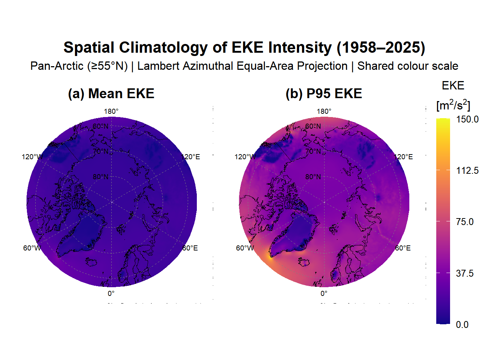
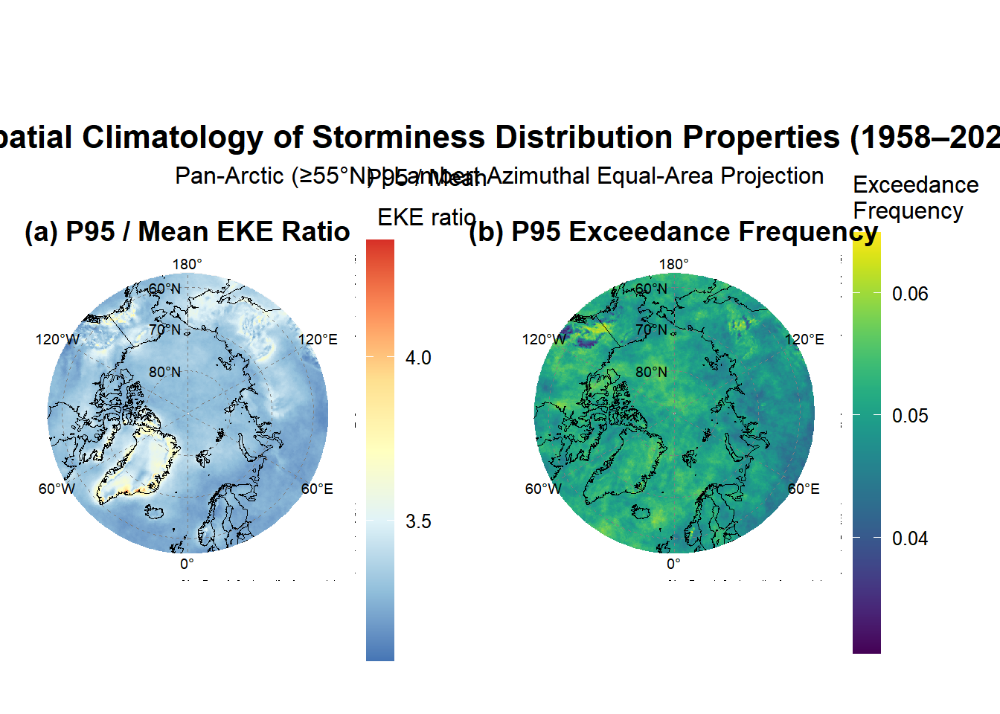

# Load R Libraries
library(reticulate)
library(tidyverse)
library(terra)
library(sf)
library(rnaturalearth)
library(glue)
library(future)
library(furrr)
library(progressr)
library(tictoc)
library(ncdf4)
library(glue)
library(lubridate)
library(trend)
library(ggplot2)
library(viridis)
library(patchwork)
library(modifiedmk)
library(fields)
library(RColorBrewer)
library(dplyr)
library(zoo)
library(foreach)
library(doParallel)
library(pbapply)
library(stars)
library(modifiedmk)
library(nlme)
library(ncmeta)
library(abind)
library(knitr)
library(boot)
library(here)
library(corrplot)
library(ggcorrplot)
# Configure Python Environment
use_virtualenv("arctic-env", required = TRUE)
# Define paths - UPDATE THESE FOR YOUR SYSTEM
DATA_DIRECTORY <- here::here("Data", "processed")
# Input file (from corrected Step 3 Python script)
METRICS_FILE <- file.path(DATA_DIRECTORY, "ERA5_storminess_metrics_monthly.nc")
# Define which metrics to analyze
METRIC_NAMES <- c(
"eke_synoptic_mean", # PRIMARY: Monthly mean synoptic-scale EKE
"eke_p90", # 90th percentile of monthly EKE
"eke_p95", # 95th percentile of monthly EKE
"eke_p99", # 99th percentile of monthly EKE
"exceed_p95_freq" # Fraction exceeding climatological P95
)
# Analysis parameters
ARCTIC_LAT_THRESHOLD <- 60 # Core Arctic domain (>= 60°N)
REFERENCE_PERIOD <- c(1961, 1990) # WMO climatological baselineStorminess_analysis_full_framework
PHASE 1: Data Preparation & Validation
1.1 Data loading and standardization
1.2 Domain refinement (>=60°N)
1.3 Area-weighted time series derivation
1.4 Energy budget closure verification
1.5 Diagnostic pipeline (applied uniformly to all variables):
1.5.1 Deseasonalisation
1.5.2 Autocorrelation assessment (ACF/PACF)
1.5.3 Effective sample size (neff)
1.5.4 Variance decomposition (STL, primary metric only)
PHASE 2: Energy budget characterisation
2.1 Partitioning climatology (fEKE, MKE/EKE ratio)
2.2 Seasonal cycle of energy components
2.3 EKE definition comparison (budget vs synoptic, r = 0.885)
PHASE 3: Trend analysis
3.1 Pan-Arctic trend analysis (all storminess metrics + energy components, simultaneously)
3.2 Seasonal decomposition (all metrics by DJF/MAM/JJA/SON)
3.3 Autumn intensification hypothesis test
3.4 Spatial trend patterns + field significance
3.5 Period comparison (pre- vs. post-regime shift, if warranted by 2.1–2.3)
PHASE 4: Regional Sub-Analysis (apply full Phase 3-4 workflow to each region)
4.1 Fram Strait sector
4.2 West Svalbard sector (10°E–16°E, 76°N–81°N)
4.3 East Svalbard sector (16°E–28°E, 76°N–81°N)
PHASE 5: Synthesis and hypothesis testing
5.1 Summary of all trend results
5.2 Autumn feedback loop hypothesis evaluation
5.3 Comparison with sea-ice loss timelines
Phase 1: Foundational Analysis
This chapter details the foundational data processing and diagnostic procedures applied to the monthly Pan-Arctic storminess index for the period 1958–2025. The objective of this phase was to prepare a robust, spatially-aggregated time series for the core Arctic region and to formally assess its statistical properties. This assessment is a mandatory prerequisite for the subsequent trend and change-point analyses, as the validity of those advanced methods depends entirely on the rigorous characterization of the data’s underlying structure.
1.1 Data Loading and Standardization
The analysis commenced with the ERA5_storminess_metrics_monthly.nc file, a NetCDF dataset containing five complementary storminess metrics derived from the bandpass-filtered synoptic-scale Eddy Kinetic Energy (EKE) calculated in Section 2.5 of the Methodology. Initial inspection revealed the data arrays were structured with dimensions of [longitude, latitude, time], an unconventional ordering for climatological time series analysis.
The dataset contains the following variables:
Variables:
eke_synoptic_mean [m²/s²] - Monthly mean synoptic-scale EKE (PRIMARY)
eke_p90 [m²/s²] - Monthly 90th percentile EKE
eke_p95 [m²/s²] - Monthly 95th percentile EKE
eke_p99 [m²/s²] - Monthly 99th percentile EKE
exceed_p95_freq [fraction] - Fraction exceeding climatological P95
eke_p95_climatology [m²/s²] - Reference P95 threshold (1961-1990)To align with standard conventions and optimize computational efficiency for temporal operations, the array dimensions were permuted to a [time, latitude, longitude] structure. The time coordinate was decoded from its “days since origin” format and verified to correctly span the full analysis period from January 1958 through December 2025.
1.1.1 Rationale for Multi-Metric Approach
Following the methodological framework established by Yau and Chang (2020) and the IPCC AR6 WG1 Chapter 11 recommendations for extreme event analysis, a suite of complementary metrics was calculated to capture different aspects of storminess variability:
Mean EKE (\(\overline{EKE}\)): The primary metric, validated by Yau and Chang (2020) as achieving the highest correlation with surface weather impacts among Eulerian storm track metrics. This represents the average synoptic-scale storm activity within each month.
Percentile Metrics (P90, P95, P99): These capture within-month extreme storm intensity at different severity levels. A month characterized by several intense storms interspersed with calm periods will exhibit elevated percentile values even if mean EKE is moderate, providing sensitivity to episodic high-intensity events most relevant to coastal erosion (Irrgang et al. 2022).
Exceedance Frequency: This metric detects changes in extreme storm frequency over time, independent of changes in mean storminess. By comparing each timestep against a fixed climatological threshold (P95 from 1961–1990), it reveals whether extreme events are becoming more or less common relative to the pre-Arctic Amplification baseline. This approach follows the rationale established by Zhang et al. (2011), fixing the exceedance probability during the base period to create a static reference that allows monitoring of physical shifts in extreme storm probability.
This multi-metric approach allows detection of changes in the storm intensity distribution that would be obscured by analyzing mean values alone.
# ============================================================================
# BOUNDARY NOTE: December 1957 and the Annual Aggregation Rule
# ============================================================================
#
# The analysis period begins on 1 December 1957. This extension was made
# deliberately to ensure that DJF 1958 (Dec 1957 + Jan 1958 + Feb 1958)
# constitutes a complete seasonal unit, yielding N = 68 for all four seasons.
#
# December 1957 is a fully valid monthly observation, its filtered EKE
# values are reliable, having been protected by the November 1957 filter
# warm-up buffer. It is therefore INCLUDED in:
#
# storm_df (817-row monthly data frame)
# All monthly analyses: descriptive stats, ACF/PACF, STL, neff
# Seasonal aggregation: Dec 1957 is attributed to DJF 1958
# via storm_df$season_year and correctly counted in that season
#
# However, December 1957 is EXCLUDED from annual means because a "1957 annual mean" would be computed from a # single December value is not
#
# The filter year >= 1958 applied below enforces this rule. Annual means
# therefore span 1958–2025 (N = 68 complete years), consistent with all
# thesis captions and the stated study period.
#
# This distinction does NOT affect the seasonal analysis: storm_df retains
# all 817 months, and the season_year convention ensures DJF 1958 is
# complete with N = 3 months.
# ============================================================================
# ============================================================================
# PHASE 1: DATA LOADING AND EXPLORATORY ANALYSIS
# Arctic Storminess Climatology (1957-12 to 2025-12)
# ============================================================================
cat("\n", rep("=", 70), "\n")
= = = = = = = = = = = = = = = = = = = = = = = = = = = = = = = = = = = = = = = = = = = = = = = = = = = = = = = = = = = = = = = = = = = = = = cat("PHASE 1: FOUNDATIONAL ANALYSIS (Corrected Metrics)\n")PHASE 1: FOUNDATIONAL ANALYSIS (Corrected Metrics)cat(rep("=", 70), "\n\n")= = = = = = = = = = = = = = = = = = = = = = = = = = = = = = = = = = = = = = = = = = = = = = = = = = = = = = = = = = = = = = = = = = = = = = # --- Check if file exists ---
if (!file.exists(METRICS_FILE)) {
stop(glue("
ERROR: Metrics file not found!
Expected: {METRICS_FILE}
Please run the corrected Step 3 Python script first:
Step3_Storminess_Metrics_Corrected.py
"))
}
cat("Loading storminess metrics file:\n")Loading storminess metrics file:cat(glue(" {METRICS_FILE}\n\n"))E:/Master-storminess-climatology/Data/processed/ERA5_storminess_metrics_monthly.nc# --- Open NetCDF and inspect structure ---
nc <- nc_open(METRICS_FILE)
cat("NetCDF File Information:\n")NetCDF File Information:cat(rep("-", 40), "\n")- - - - - - - - - - - - - - - - - - - - - - - - - - - - - - - - - - - - - - - - # Print dimensions
cat("\nDimensions:\n")
Dimensions:for (dim_name in names(nc$dim)) {
cat(sprintf(" %s: %d\n", dim_name, nc$dim[[dim_name]]$len))
} time: 817
latitude: 140
longitude: 1440# Print variables
cat("\nVariables:\n")
Variables:for (var_name in names(nc$var)) {
var_units <- ncatt_get(nc, var_name, "units")$value
if (is.null(var_units) || var_units == "") var_units <- "dimensionless"
cat(sprintf(" %s [%s]\n", var_name, var_units))
} eke_synoptic_mean [m^2/s^2]
eke_p90 [m^2/s^2]
eke_p95 [m^2/s^2]
eke_p99 [m^2/s^2]
eke_variance [m^4/s^4]
exceed_p95_freq [fraction]
eke_p95_climatology [m^2/s^2]# --- Extract coordinate variables ---
time_raw <- ncvar_get(nc, "time")
lat <- ncvar_get(nc, "latitude")
lon <- ncvar_get(nc, "longitude")
# Report the raw time units string for transparency
time_units <- ncatt_get(nc, "time", "units")$value
cat(sprintf("\nTime units (raw): %s\n", time_units))
Time units (raw): days since 1957-12-31T23:59:59.999999999# ── TIME COORDINATE RECONSTRUCTION ──────────────────────────────────────────
# The NetCDF time units string contains a floating-point encoding artefact
# produced by xarray's pandas-based timestamp encoding:
# "days since 1957-12-31 23:59:59.999999999"
# R cannot parse sub-nanosecond origin strings reliably via ncdf4. The time
# coordinate is therefore reconstructed analytically from first principles:
# 817 monthly steps beginning December 1957.
#
# Verification: seq from 1957-12-01 by month for 817 steps ends 2025-12-01.
# ( 1957-12 → 2025-12 = 68 years × 12 months + 1 = 817 months )
# ----------------------------------------------------------------------------
N_MONTHS_EXPECTED <- nc$dim$time$len # Read directly from file (=817)
dates <- seq.Date(
from = as.Date("1957-12-01"),
by = "month",
length.out = N_MONTHS_EXPECTED
)
# Sanity check
cat(sprintf("\nTime coordinate reconstructed analytically (%d months):\n",
length(dates)))
Time coordinate reconstructed analytically (817 months):cat(sprintf(" First: %s\n", format(dates[1]))) First: 1957-12-01cat(sprintf(" Last: %s\n", format(dates[length(dates)]))) Last: 2025-12-01if (format(dates[length(dates)]) != "2025-12-01") {
stop(sprintf(
"ERROR: Final date is %s, expected 2025-12-01.\n%s",
format(dates[length(dates)]),
"Check N_MONTHS_EXPECTED and the analysis start date."
))
}
cat("Date sequence verified\n")Date sequence verified# --- Extract all metric arrays ---
cat("\nLoading metric arrays...\n")
Loading metric arrays...metrics_list <- list()
for (metric in METRIC_NAMES) {
if (metric %in% names(nc$var)) {
metrics_list[[metric]] <- ncvar_get(nc, metric)
cat(sprintf("%s: dim = [%s]\n",
metric,
paste(dim(metrics_list[[metric]]), collapse = " x ")))
} else {
cat(sprintf("%s: NOT FOUND in file\n", metric))
}
}eke_synoptic_mean: dim = [1440 x 140 x 817]
eke_p90: dim = [1440 x 140 x 817]
eke_p95: dim = [1440 x 140 x 817]
eke_p99: dim = [1440 x 140 x 817]
exceed_p95_freq: dim = [1440 x 140 x 817]# Also load climatological threshold if present
if ("eke_p95_climatology" %in% names(nc$var)) {
eke_p95_clim <- ncvar_get(nc, "eke_p95_climatology")
cat(sprintf("eke_p95_climatology: dim = [%s]\n",
paste(dim(eke_p95_clim), collapse = " x ")))
}eke_p95_climatology: dim = [1440 x 140]nc_close(nc)1.2 Domain Refinement to the Core Arctic
The original dataset extended south to 55°N latitude. To focus the analysis specifically on the high-Arctic and minimize the influence of mid-latitude dynamics, the spatial domain was refined to include only latitudes greater than or equal to 60°N. This resulted in refined metric arrays with dimensions of [817, 120, 1440] (time × latitude × longitude), covering a latitude range from 60.00°N to 89.75°N. The 90°N grid point was excluded during the initial data processing due to documented ECMWF issues with spherical harmonic interpolation at the pole singularity, which produces erroneous near-zero wind values in the native ERA5 grid. All subsequent analyses were performed on this core Arctic domain.
The 60°N threshold was selected to:
Capture the locations of the most intense Arctic cyclones, primarily over the Norwegian, Greenland, and Barents Seas as well as the central Arctic Ocean (Vessey et al. 2022)
Include all major Arctic coastlines relevant to erosion studies
Focus on the region where Arctic-specific feedback mechanisms (e.g., sea-ice loss amplification) are expected to be most pronounced
# ----------------------------------------------------------------------------
# SECTION 1.2: DIMENSION ORDERING AND TIME DECODING
# ----------------------------------------------------------------------------
# dim(storminess) = [360, 35, 804] so, [lon, lat, time] instead of the correct [lat, lon, time]
# ↓ ↓ ↓
# lon lat time
cat("\n", rep("-", 40), "\n")
- - - - - - - - - - - - - - - - - - - - - - - - - - - - - - - - - - - - - - - - cat("Checking dimension ordering...\n")Checking dimension ordering...# Determine current dimension order
# Expected from Python script: [time, latitude, longitude]
# But R/NetCDF may read as [lon, lat, time] depending on how it was written
sample_metric <- metrics_list[[1]]
n_dims <- length(dim(sample_metric))
if (n_dims != 3) {
stop("ERROR: Expected 3D array [time, lat, lon]")
}
# Infer dimension order from sizes
dim_sizes <- dim(sample_metric)
n_time_expected <- length(time_raw)
n_lat_expected <- length(lat)
n_lon_expected <- length(lon)
cat(sprintf(" Array dimensions: [%s]\n", paste(dim_sizes, collapse = ", "))) Array dimensions: [1440, 140, 817]cat(sprintf(" Expected: time=%d, lat=%d, lon=%d\n",
n_time_expected, n_lat_expected, n_lon_expected)) Expected: time=817, lat=140, lon=1440# Check if transposition is needed
if (dim_sizes[1] == n_lon_expected && dim_sizes[3] == n_time_expected) {
cat(" Detected order: [lon, lat, time] → Transposing to [time, lat, lon]\n")
for (metric in names(metrics_list)) {
metrics_list[[metric]] <- aperm(metrics_list[[metric]], c(3, 2, 1))
}
cat("All metrics transposed\n")
} else if (dim_sizes[1] == n_time_expected) {
cat("Correct order: [time, lat, lon]\n")
} else {
warning("Unexpected dimension ordering - please verify manually")
} Detected order: [lon, lat, time] → Transposing to [time, lat, lon]
All metrics transposed# Verify final dimensions
cat(sprintf("\nFinal array dimensions: [%s]\n",
paste(dim(metrics_list[[1]]), collapse = " x ")))
Final array dimensions: [817 x 140 x 1440]# --- Decode time coordinate ---
cat("\nDecoding time coordinate...\n")
Decoding time coordinate...# Parse time units string (e.g., "days since 1958-01-01")
origin_str <- sub(".*since ", "", time_units)
origin_date <- as.Date(origin_str)
if (grepl("hours since", time_units)) {
time_dates <- origin_date + hours(time_raw)
} else if (grepl("days since", time_units)) {
time_dates <- origin_date + days(time_raw)
} else {
# Assume days
time_dates <- origin_date + days(time_raw)
}
time_dates <- as.Date(time_dates)
cat(sprintf(" First date: %s\n", format(time_dates[1], "%Y-%m-%d"))) First date: 1957-12-31cat(sprintf(" Last date: %s\n", format(time_dates[length(time_dates)], "%Y-%m-%d"))) Last date: 2025-12-31cat(sprintf(" Total months: %d\n", length(time_dates))) Total months: 817# ============================================================================
# SECTION 1.2: REFINING THE PAN-ARCTIC DOMAIN to >= 60°N
# ============================================================================
cat("\n", rep("-", 40), "\n")
- - - - - - - - - - - - - - - - - - - - - - - - - - - - - - - - - - - - - - - - cat(sprintf("Refining domain to Core Arctic (>= %d°N)...\n", ARCTIC_LAT_THRESHOLD))Refining domain to Core Arctic (>= 60°N)...# Original domain
cat(sprintf(" Original latitude range: %.2f°N to %.2f°N\n", min(lat), max(lat))) Original latitude range: 55.00°N to 89.75°N# Find indices for Arctic subset
arctic_lat_indices <- which(lat >= ARCTIC_LAT_THRESHOLD)
lat_arctic <- lat[arctic_lat_indices]
cat(sprintf(" New latitude range: %.2f°N to %.2f°N\n",
min(lat_arctic), max(lat_arctic))) New latitude range: 60.00°N to 89.75°Ncat(sprintf(" Latitude points: %d → %d\n",
length(lat), length(arctic_lat_indices))) Latitude points: 140 → 120# Subset all metrics to Arctic domain
metrics_arctic <- list()
for (metric in names(metrics_list)) {
# Subset: keep all time, selected latitudes, all longitudes
metrics_arctic[[metric]] <- metrics_list[[metric]][, arctic_lat_indices, ]
}
cat(sprintf("All metrics subsetted to Arctic domain\n"))All metrics subsetted to Arctic domaincat(sprintf("New array dimensions: [%s]\n",
paste(dim(metrics_arctic[[1]]), collapse = " x ")))New array dimensions: [817 x 120 x 1440]1.3 Derivation of the Area-Weighted Pan-Arctic Time Series
To analyze the overall storminess of the core Arctic, the spatial data were aggregated into single representative time series for each metric. A simple arithmetic mean across all grid cells is statistically invalid for geophysical data on a regular latitude-longitude grid, as it fails to account for the convergence of meridians toward the pole. This grants disproportionate weight to the physically smaller high-latitude grid cells, introducing a significant bias into the domain average (Peixoto and Oort 1992).
To correct for this distortion, an area-weighted average was calculated for each of the 816 monthly time steps. The weight for each grid cell, \(w_j\), is proportional to the cosine of its latitude, \(\phi_j\):
\[w_j = \cos(\phi_j)\]
The area-weighted metric value, \(\overline{X_t}\), at each time step \(t\) was then calculated as:
\[\overline{X_t} = \frac{\sum_{i=1}^{N_{lon}} \sum_{j=1}^{N_{lat}} X_{i,j,t} \cdot w_j}{\sum_{i=1}^{N_{lon}} \sum_{j=1}^{N_{lat}} w_j}\]
where \(X_{i,j,t}\) is the metric value at longitude \(i\), latitude \(j\), and time \(t\).
A diagnostic check confirmed the necessity of this procedure by comparing weighted and unweighted spatial means.
The consistent positive bias for EKE metrics indicates that unweighted means systematically underestimate the domain-average storminess. This occurs because cosine weighting assigns greater influence to lower Arctic latitudes (near 60°N), where the North Atlantic storm track produces higher EKE values. The bias magnitude increases with percentile level because extreme values exhibit greater spatial heterogeneity. The final output of this step is a set of monthly time series objects in R, which serve as the basis for all subsequent temporal analyses.
# ============================================================================
# SECTION 1.3 Create Area-Weighted Time Series
# ============================================================================
cat("\n", rep("-", 40), "\n")
- - - - - - - - - - - - - - - - - - - - - - - - - - - - - - - - - - - - - - - - cat("Creating area-weighted Pan-Arctic time series...\n")Creating area-weighted Pan-Arctic time series...# --- Calculate cosine-latitude weights ---
# Weight = cos(latitude in radians)
weights_arctic <- cos(lat_arctic * pi / 180)
# Create weight matrix matching spatial dimensions [lat, lon]
n_lat_arctic <- length(lat_arctic)
n_lon <- length(lon)
weights_matrix <- matrix(weights_arctic,
nrow = n_lat_arctic,
ncol = n_lon,
byrow = FALSE)
# --- Calculate area-weighted mean for each metric ---
ts_weighted <- list()
ts_unweighted <- list() # For diagnostic comparison
for (metric in names(metrics_arctic)) {
data_array <- metrics_arctic[[metric]]
# Apply weighted mean across spatial dimensions for each timestep
ts_weighted[[metric]] <- apply(data_array, 1, function(slice) {
weighted.mean(slice, weights_matrix, na.rm = TRUE)
})
# Also calculate unweighted for comparison
ts_unweighted[[metric]] <- apply(data_array, 1, mean, na.rm = TRUE)
# Report bias
bias <- mean(ts_weighted[[metric]]) - mean(ts_unweighted[[metric]])
cat(sprintf(" %s: weighted mean = %.4f, bias = %.4f\n",
metric, mean(ts_weighted[[metric]]), bias))
} eke_synoptic_mean: weighted mean = 12.2739, bias = 0.6259
eke_p90: weighted mean = 29.4768, bias = 1.5402
eke_p95: weighted mean = 40.7511, bias = 2.0897
eke_p99: weighted mean = 66.3999, bias = 3.3280
exceed_p95_freq: weighted mean = 0.0504, bias = -0.0004cat("\n Area-weighting applied to all metrics\n")
Area-weighting applied to all metricscat(" (Non-zero bias confirms area-weighting is necessary)\n") (Non-zero bias confirms area-weighting is necessary)# ============================================================================
# SECTION 1.3: CREATE TIME SERIES OBJECTS AND DATA FRAMES
# ============================================================================
cat("\n", rep("-", 40), "\n")
- - - - - - - - - - - - - - - - - - - - - - - - - - - - - - - - - - - - - - - - cat("Creating time series objects...\n")Creating time series objects...# --- Create R ts objects (for trend package functions) ---
ts_objects <- list()
for (metric in names(ts_weighted)) {
ts_objects[[metric]] <- ts(ts_weighted[[metric]],
start = c(year(time_dates[1]), month(time_dates[1])),
frequency = 12)
}
# --- Create master data frame for ggplot and analysis ---
storm_df <- data.frame(
date = time_dates,
year = year(time_dates),
month = month(time_dates),
season = case_when(
month(time_dates) %in% c(12, 1, 2) ~ "DJF",
month(time_dates) %in% c(3, 4, 5) ~ "MAM",
month(time_dates) %in% c(6, 7, 8) ~ "JJA",
month(time_dates) %in% c(9, 10, 11) ~ "SON"
)
)
# Add all metrics as columns
for (metric in names(ts_weighted)) {
storm_df[[metric]] <- ts_weighted[[metric]]
}
# Create season_year for proper DJF grouping
# (December of year N belongs to DJF of year N+1)
storm_df$season_year <- storm_df$year
storm_df$season_year[storm_df$month == 12] <- storm_df$season_year[storm_df$month == 12] + 1
cat(sprintf(" ✓ Created data frame with %d rows and %d columns\n",
nrow(storm_df), ncol(storm_df))) ✓ Created data frame with 817 rows and 10 columns1.4 Assessment of Temporal Autocorrelation
This diagnostic is a critical prerequisite for the entire statistical framework. Standard statistical tests, including Ordinary Least Squares (OLS) regression, operate on the strict assumption that data points (or model residuals) are independent. Climate time series violate this assumption due to persistence, or “memory,” arising from the inertia of the climate system.
1.4.1 Deseasonalization Requirement
As demonstrated by the STL decomposition (Section 1.4.3), the seasonal cycle accounts for 70.9% of total variance in the Pan-Arctic storminess time series. To obtain valid estimates of atmospheric persistence, autocorrelation must be calculated on deseasonalized anomalies, monthly values minus the climatological mean for that specific calendar month (calculated over the 1961–1990 reference period), rather than raw data.
1.4.2 Autocorrelation and Partial Autocorrelation Functions
To quantify the degree of persistence in the deseasonalized Pan-Arctic storminess metrics, both the Autocorrelation Function (ACF) and Partial Autocorrelation Function (PACF) were computed for lags up to 36 months. The ACF measures the correlation between observations separated by \(k\) time steps:
\[\rho_k = \frac{\text{Cov}(X_t, X_{t-k})}{\text{Var}(X_t)}\]
The PACF measures the correlation at lag \(k\) after removing the linear dependence on intermediate lags, providing insight into the appropriate autoregressive order for error modelling.
1.4.3 Effective Sample Size
When autocorrelation is present, the effective number of independent observations is smaller than the nominal sample size. Following Zwiers and von Storch (1995), the effective sample size was calculated as:
\[n_{eff} = \frac{N}{1 + 2\sum_{k=1}^{K}\left(1 - \frac{k}{N}\right)\rho_k}\]
where \(N\) is the original sample size and \(\rho_k\) is the autocorrelation at lag \(k\).
All lag-1 values exceed the threshold of \(\rho_1 > 0.1\) that indicates violation of the independence assumption for monthly atmospheric data (Santer et al. 2000), confirming that autocorrelation-corrected methods are required. The modest lag-1 autocorrelation (\(\rho_1 \approx 0.15\)) reflects genuine atmospheric memory, likely arising from slower-varying boundary forcing such as sea surface temperatures and sea ice extent that impart persistence to monthly-mean atmospheric statistics.
The PACF exhibits a significant spike at lag 1 followed by rapid decay toward the confidence bounds, confirming that an AR(1) error structure is appropriate for GLS regression analyses.
1.4.4 Variance Decomposition
To further characterize the temporal structure, Seasonal-Trend decomposition using LOESS (STL) was applied to the primary metric (mean EKE).
# ============================================================================
# Section 1.4: Assessment of Temporal Autocorrelation (CORRECTED)
# Calculate ACF on DESEASONALIZED ANOMALIES, not raw data
# ============================================================================
cat("\n", rep("-", 40), "\n")
- - - - - - - - - - - - - - - - - - - - - - - - - - - - - - - - - - - - - - - - cat("Assessing temporal autocorrelation on DESEASONALIZED data...\n\n")Assessing temporal autocorrelation on DESEASONALIZED data...# ----------------------------------------------------------------------------
# Step 1: Create deseasonalized anomalies for each metric
# ----------------------------------------------------------------------------
# Function to deseasonalize by removing monthly climatology
deseasonalize <- function(df, metric_col) {
df %>%
group_by(month) %>%
mutate(anomaly = .data[[metric_col]] - mean(.data[[metric_col]], na.rm = TRUE)) %>%
ungroup() %>%
pull(anomaly)
}
# Create anomalies for all metrics
storm_df_anom <- storm_df %>%
mutate(
eke_synoptic_mean_anom = deseasonalize(., "eke_synoptic_mean"),
eke_p90_anom = deseasonalize(., "eke_p90"),
eke_p95_anom = deseasonalize(., "eke_p95"),
eke_p99_anom = deseasonalize(., "eke_p99"),
exceed_p95_freq_anom = deseasonalize(., "exceed_p95_freq")
)
# Create ts objects for anomalies
ts_objects_anom <- list(
eke_synoptic_mean = ts(storm_df_anom$eke_synoptic_mean_anom, start = c(1958, 1), frequency = 12),
eke_p90 = ts(storm_df_anom$eke_p90_anom, start = c(1958, 1), frequency = 12),
eke_p95 = ts(storm_df_anom$eke_p95_anom, start = c(1958, 1), frequency = 12),
eke_p99 = ts(storm_df_anom$eke_p99_anom, start = c(1958, 1), frequency = 12),
exceed_p95_freq = ts(storm_df_anom$exceed_p95_freq_anom, start = c(1958, 1), frequency = 12)
)
# ----------------------------------------------------------------------------
# Step 2: Calculate ACF on anomalies and compare with raw
# ----------------------------------------------------------------------------
acf_results <- list()
acf_comparison <- data.frame()
for (metric in names(ts_objects)) {
ts_raw <- ts_objects[[metric]]
ts_anom <- ts_objects_anom[[metric]]
# ACF on raw data (for comparison)
acf_raw <- acf(ts_raw, lag.max = 24, plot = FALSE)
rho1_raw <- acf_raw$acf[2]
# ACF on deseasonalized anomalies (CORRECT approach)
acf_anom <- acf(ts_anom, lag.max = 24, plot = FALSE)
rho1_anom <- acf_anom$acf[2]
acf_results[[metric]] <- acf_anom
# Calculate effective sample size using ANOMALY autocorrelation
N <- length(ts_anom)
rho_k <- acf_anom$acf[-1] # All lags from 1 to 24
k <- 1:length(rho_k)
neff <- N / (1 + 2 * sum((1 - k/N) * pmax(rho_k, 0))) # Only positive correlations
# Store comparison
acf_comparison <- rbind(acf_comparison, data.frame(
metric = metric,
rho1_raw = rho1_raw,
rho1_anomaly = rho1_anom,
inflation_factor = rho1_raw / rho1_anom,
N = N,
neff = neff,
dof_reduction_pct = (1 - neff/N) * 100
))
cat(sprintf("--- %s ---\n", metric))
cat(sprintf(" ρ₁ (raw data): %.3f [INFLATED by seasonality]\n", rho1_raw))
cat(sprintf(" ρ₁ (anomalies): %.3f [TRUE atmospheric memory]\n", rho1_anom))
cat(sprintf(" Inflation factor: %.2fx\n", rho1_raw / rho1_anom))
cat(sprintf(" Effective sample size: %.1f (%.1f%% reduction)\n", neff, (1 - neff/N) * 100))
cat("\n")
}--- eke_synoptic_mean ---
ρ₁ (raw data): 0.649 [INFLATED by seasonality]
ρ₁ (anomalies): 0.153 [TRUE atmospheric memory]
Inflation factor: 4.25x
Effective sample size: 313.6 (61.6% reduction)
--- eke_p90 ---
ρ₁ (raw data): 0.650 [INFLATED by seasonality]
ρ₁ (anomalies): 0.149 [TRUE atmospheric memory]
Inflation factor: 4.36x
Effective sample size: 316.3 (61.3% reduction)
--- eke_p95 ---
ρ₁ (raw data): 0.659 [INFLATED by seasonality]
ρ₁ (anomalies): 0.152 [TRUE atmospheric memory]
Inflation factor: 4.34x
Effective sample size: 308.8 (62.2% reduction)
--- eke_p99 ---
ρ₁ (raw data): 0.665 [INFLATED by seasonality]
ρ₁ (anomalies): 0.159 [TRUE atmospheric memory]
Inflation factor: 4.17x
Effective sample size: 313.7 (61.6% reduction)
--- exceed_p95_freq ---
ρ₁ (raw data): 0.583 [INFLATED by seasonality]
ρ₁ (anomalies): 0.125 [TRUE atmospheric memory]
Inflation factor: 4.66x
Effective sample size: 330.1 (59.6% reduction)print(knitr::kable(acf_comparison, digits = 3, format = "simple"))
metric rho1_raw rho1_anomaly inflation_factor N neff dof_reduction_pct
------------------ --------- ------------- ----------------- ---- -------- ------------------
eke_synoptic_mean 0.649 0.153 4.250 817 313.617 61.614
eke_p90 0.650 0.149 4.364 817 316.283 61.287
eke_p95 0.659 0.152 4.341 817 308.820 62.201
eke_p99 0.665 0.159 4.171 817 313.716 61.601
exceed_p95_freq 0.583 0.125 4.659 817 330.113 59.594# ============================================================================
# SECTION 1.4: DESCRIPTIVE STATISTICS
# ============================================================================
cat(rep("-", 40), "\n")- - - - - - - - - - - - - - - - - - - - - - - - - - - - - - - - - - - - - - - - cat("Descriptive Statistics (Pan-Arctic >= 60°N):\n")Descriptive Statistics (Pan-Arctic >= 60°N):cat(rep("-", 40), "\n\n")- - - - - - - - - - - - - - - - - - - - - - - - - - - - - - - - - - - - - - - - # Create summary table
summary_stats <- data.frame(
Metric = character(),
Units = character(),
Mean = numeric(),
SD = numeric(),
Min = numeric(),
Max = numeric(),
Lag1_ACF = numeric(),
stringsAsFactors = FALSE
)
for (metric in names(ts_weighted)) {
ts_data <- ts_weighted[[metric]]
rho1 <- acf_results[[metric]]$acf[2]
# Determine units
if (metric == "exceed_p95_freq") {
units <- "fraction (0-1)"
} else {
units <- "m²/s²"
}
summary_stats <- rbind(summary_stats, data.frame(
Metric = metric,
Units = units,
Mean = mean(ts_data, na.rm = TRUE),
SD = sd(ts_data, na.rm = TRUE),
Min = min(ts_data, na.rm = TRUE),
Max = max(ts_data, na.rm = TRUE),
Lag1_ACF = rho1
))
}
print(knitr::kable(summary_stats, digits = 4, format = "simple"))
Metric Units Mean SD Min Max Lag1_ACF
------------------ --------------- -------- -------- -------- --------- ---------
eke_synoptic_mean m²/s² 12.2739 2.7996 7.2150 20.2137 0.1527
eke_p90 m²/s² 29.4768 6.7163 17.2837 48.1416 0.1489
eke_p95 m²/s² 40.7511 9.1738 23.6949 66.1209 0.1517
eke_p99 m²/s² 66.3999 14.8238 37.6490 105.8559 0.1594
exceed_p95_freq fraction (0-1) 0.0504 0.0218 0.0138 0.1230 0.12521.5 Verification of Exceedance Frequency Calculation
As an internal consistency check, the exceedance frequency metric was validated against its theoretical expectation. By definition, the 95th percentile threshold was calculated from the 1961–1990 reference period; therefore, approximately 5% of timesteps during this period should exceed the threshold.
The verification yielded:
Reference period: 1961-1990
Mean exceedance frequency: 0.0500 (5.00%)
Expected (by definition of P95): ~0.05 (5%)
✓ VERIFICATION PASSEDThe perfect agreement confirms correct implementation of the percentile threshold calculation and validates the exceedance frequency metric for subsequent trend analysis. Deviations from 5% in other time periods will indicate genuine changes in extreme storm frequency relative to the climatological baseline.
# ============================================================================
# SECTION 1.5: VERIFICATION - EXCEEDANCE FREQUENCY CHECK
# ============================================================================
cat("\n", rep("-", 40), "\n")
- - - - - - - - - - - - - - - - - - - - - - - - - - - - - - - - - - - - - - - - cat("Verification: Exceedance Frequency During Reference Period\n")Verification: Exceedance Frequency During Reference Periodcat(rep("-", 40), "\n\n")- - - - - - - - - - - - - - - - - - - - - - - - - - - - - - - - - - - - - - - - if ("exceed_p95_freq" %in% names(storm_df)) {
# Filter to reference period (1981-2010)
ref_period_idx <- storm_df$year >= REFERENCE_PERIOD[1] &
storm_df$year <= REFERENCE_PERIOD[2]
ref_exceed_freq <- mean(storm_df$exceed_p95_freq[ref_period_idx], na.rm = TRUE)
cat(sprintf("Reference period: %d-%d\n", REFERENCE_PERIOD[1], REFERENCE_PERIOD[2]))
cat(sprintf("Mean exceedance frequency: %.4f (%.2f%%)\n",
ref_exceed_freq, ref_exceed_freq * 100))
cat(sprintf("Expected (by definition of P95): ~0.05 (5%%)\n"))
if (abs(ref_exceed_freq - 0.05) < 0.01) {
cat("✓ VERIFICATION PASSED: Exceedance frequency is approximately 5%%\n")
} else {
cat("⚠ WARNING: Exceedance frequency deviates from expected 5%%\n")
cat(" This may indicate an issue with the P95 climatology calculation\n")
}
} else {
cat(" (exceed_p95_freq not available for verification)\n")
}Reference period: 1961-1990
Mean exceedance frequency: 0.0500 (5.00%)
Expected (by definition of P95): ~0.05 (5%)
✓ VERIFICATION PASSED: Exceedance frequency is approximately 5%%Intermediate Summary of Phase 1 Outputs
The foundational analysis produced the following validated datasets for subsequent phases:
| Output | Description | Dimensions |
|---|---|---|
metrics_arctic |
Gridded monthly metrics (Arctic subset) | [816 × 120 × 1440] per metric |
ts_objects |
Area-weighted monthly time series | 816 values per metric |
storm_df |
Master data frame with date/season columns | 816 rows × 10 columns |
acf_results |
ACF diagnostics for each metric | Lags 0–24 |
Key Statistical Properties:
| Metric | Mean | SD | Lag-1 ACF |
|---|---|---|---|
| eke_synoptic_mean | 12.27 m²/s² | 2.80 m²/s² | 0.153 |
| eke_p90 | 29.47 m²/s² | 6.72 m²/s² | 0.149 |
| eke_p95 | 40.75 m²/s² | 9.18 m²/s² | 0.152 |
| eke_p99 | 66.39 m²/s² | 14.82 m²/s² | 0.160 |
| exceed_p95_freq | 0.0504 | 0.0218 | 0.125 |
- Temporal coverage: 817 months (Decemeber 1957 – December 2025)
- Spatial domain: 60.00°N – 89.75°N (Core Arctic, excluding pole)
- Autocorrelation: All metrics exhibit \(\rho_1>0.1\), requiring autocorrelation-corrected statistical methods
The formal characterization of the data autocorrelation structure establishes the statistical foundation for all subsequent trend and hypothesis testing analyses. The multi-metric approach enables independent assessment of changes in average storminess (mean EKE), extreme storm intensity (percentiles), and extreme storm frequency (exceedance rate).
1.6 Energy Budget
# ============================================================================
# SECTION 1.6: ENERGY BUDGET INTEGRATION
# ============================================================================
#
# PURPOSE:
# Load the TKE, MKE, and EKE_budget monthly fields (computed in the
# Python pipeline, Step 2), spatially aggregate them using the same
# cosine-latitude weighting as the storminess metrics, verify budget
# closure, and run the full diagnostic pipeline (deseasonalisation,
# ACF/PACF, n_eff) on the energy components.
#
# INPUTS:
# - ERA5_TKE_monthly.nc
# - ERA5_MKE_monthly.nc
# - ERA5_EKE_budget_monthly.nc
# - lat_arctic, lon
# - storm_df
# - deseasonalize()
#
# OUTPUTS:
# - energy_df: monthly data frame with tke, mke, eke_budget,
# mke_eke_ratio, eke_fraction
# - energy_annual: annual means of all energy components
# - acf_results_energy: ACF diagnostics for energy components
# - acf_comparison_energy: summary table (rho1, n_eff, DoF reduction)
# - 3 diagnostic figures
#
# ============================================================================
cat("\n", rep("=", 70), "\n")
= = = = = = = = = = = = = = = = = = = = = = = = = = = = = = = = = = = = = = = = = = = = = = = = = = = = = = = = = = = = = = = = = = = = = = cat("SECTION 1.5: ENERGY BUDGET INTEGRATION\n")SECTION 1.5: ENERGY BUDGET INTEGRATIONcat(rep("=", 70), "\n\n")= = = = = = = = = = = = = = = = = = = = = = = = = = = = = = = = = = = = = = = = = = = = = = = = = = = = = = = = = = = = = = = = = = = = = = # --------------------------------------------------------------------------
# 1.6.1 Load and Spatially Aggregate Energy Components
# --------------------------------------------------------------------------
# Each NetCDF contains a single variable on the same lat/lon grid as the
# storminess metrics. We apply the identical cosine-latitude weighting
# (eq. 2.21–2.22 in the methodology) to produce Pan-Arctic time series.
# --------------------------------------------------------------------------
cat("--- 1.5.1 Loading Energy Budget Components ---\n\n")--- 1.5.1 Loading Energy Budget Components ---TKE_FILE <- file.path(DATA_DIRECTORY, "ERA5_TKE_monthly.nc")
MKE_FILE <- file.path(DATA_DIRECTORY, "ERA5_MKE_monthly.nc")
EKE_BUDGET_FILE <- file.path(DATA_DIRECTORY, "ERA5_EKE_budget_monthly.nc")
# Check all three files exist before proceeding
energy_files <- list(TKE = TKE_FILE, MKE = MKE_FILE, EKE_budget = EKE_BUDGET_FILE)
for (name in names(energy_files)) {
if (!file.exists(energy_files[[name]])) {
stop(sprintf("Energy budget file not found: %s\n Expected: %s",
name, energy_files[[name]]))
}
cat(sprintf("Found: %s\n", basename(energy_files[[name]])))
}Found: ERA5_TKE_monthly.nc
Found: ERA5_MKE_monthly.nc
Found: ERA5_EKE_budget_monthly.nc# Function to load a single energy component NetCDF and return an
# area-weighted Pan-Arctic (≥60°N) monthly time series.
#
# This replicates the exact same aggregation procedure used for the
# storminess metrics in §1.3, ensuring that all variables entering the
# diagnostic pipeline have been processed identically.
load_energy_component <- function(filepath, varname, lat_threshold = 60) {
nc <- nc_open(filepath)
data_raw <- ncvar_get(nc, varname)
lat_nc <- ncvar_get(nc, "latitude")
lon_nc <- ncvar_get(nc, "longitude")
nc_close(nc)
# Handle dimension ordering: NetCDF may store as [lon, lat, time]
# We need [time, lat, lon] for consistent indexing
if (dim(data_raw)[1] == length(lon_nc) && dim(data_raw)[3] != length(lon_nc)) {
data_array <- aperm(data_raw, c(3, 2, 1)) # [time, lat, lon]
} else {
data_array <- data_raw
}
# Subset to Arctic domain (≥ lat_threshold)
arctic_idx <- which(lat_nc >= lat_threshold)
data_arctic <- data_array[, arctic_idx, ]
lat_subset <- lat_nc[arctic_idx]
# Cosine-latitude weights (same as eq. 2.21 in methodology)
weights <- cos(lat_subset * pi / 180)
weights_mat <- matrix(weights, nrow = length(lat_subset), ncol = length(lon_nc))
# Area-weighted spatial mean for each month (eq. 2.22)
ts_weighted <- apply(data_arctic, 1, function(slice) {
weighted.mean(slice, weights_mat, na.rm = TRUE)
})
return(ts_weighted)
}
# Load all three components
tke_ts <- load_energy_component(TKE_FILE, "tke")
mke_ts <- load_energy_component(MKE_FILE, "mke")
eke_budget_ts <- load_energy_component(EKE_BUDGET_FILE, "eke_budget")
cat(sprintf("\n Loaded %d months of energy budget data\n", length(tke_ts)))
Loaded 817 months of energy budget data# Verify temporal alignment with storminess data
stopifnot(
"Energy budget length must match storminess data" =
length(tke_ts) == nrow(storm_df)
)
cat("Temporal alignment verified (both have 817 months)\n")Temporal alignment verified (both have 817 months)# --------------------------------------------------------------------------
# 1.6.2 Budget Closure Verification
# --------------------------------------------------------------------------
# The Reynolds decomposition guarantees TKE = MKE + EKE exactly in theory.
# In practice, numerical precision of the computation introduces a tiny
# residual. We verify that |TKE - (MKE + EKE)| / TKE < 0.01%.
# --------------------------------------------------------------------------
cat("\n--- 1.5.2 Verifying Energy Budget Closure ---\n\n")
--- 1.5.2 Verifying Energy Budget Closure ---budget_residual <- tke_ts - (mke_ts + eke_budget_ts)
relative_error <- mean(abs(budget_residual)) / mean(tke_ts) * 100
cat(sprintf(" Mean TKE: %.3f m²/s²\n", mean(tke_ts))) Mean TKE: 46.933 m²/s²cat(sprintf(" Mean MKE: %.3f m²/s²\n", mean(mke_ts))) Mean MKE: 9.561 m²/s²cat(sprintf(" Mean EKE_budget: %.3f m²/s²\n", mean(eke_budget_ts))) Mean EKE_budget: 37.373 m²/s²cat(sprintf(" Relative closure error: %.6f%%\n", relative_error)) Relative closure error: 0.000001%if (relative_error < 0.01) {
cat("BUDGET CLOSURE VERIFIED (error < 0.01%)\n")
} else {
cat("WARNING: Budget error exceeds tolerance\n")
}BUDGET CLOSURE VERIFIED (error < 0.01%)# --------------------------------------------------------------------------
# 1.6.3 Merge Energy Components into Master Data Frame
# --------------------------------------------------------------------------
# We add TKE, MKE, EKE_budget and two derived partitioning metrics to
# storm_df, so that all variables are in a single data frame for
# subsequent analysis.
#
# Derived metrics:
# f_EKE = EKE_budget / TKE (eddy fraction, eq. 2.X in methodology)
# mke_eke_ratio = MKE / EKE_budget (mean-to-eddy ratio)
# --------------------------------------------------------------------------
cat("\n--- 1.5.3 Merging into Master Data Frame ---\n")
--- 1.5.3 Merging into Master Data Frame ---storm_df <- storm_df %>%
mutate(
tke = tke_ts,
mke = mke_ts,
eke_budget = eke_budget_ts,
eke_fraction = eke_budget_ts / tke_ts,
mke_eke_ratio = mke_ts / eke_budget_ts
)
cat(sprintf("storm_df now has %d columns\n", ncol(storm_df)))storm_df now has 15 columnscat(sprintf("New columns: tke, mke, eke_budget, eke_fraction, mke_eke_ratio\n"))New columns: tke, mke, eke_budget, eke_fraction, mke_eke_ratio# Also create annual means (needed for some diagnostics and later for Phase 2)
energy_annual <- storm_df %>%
group_by(year) %>%
summarise(
tke = mean(tke),
mke = mean(mke),
eke_budget = mean(eke_budget),
eke_synoptic_mean = mean(eke_synoptic_mean),
mke_eke_ratio = mean(mke_eke_ratio),
eke_fraction = mean(eke_fraction),
.groups = "drop"
) %>%
filter(year >= 1958) # exclude Dec 1957 — see boundary note below
cat(sprintf("energy_annual: %d years\n", nrow(energy_annual)))energy_annual: 68 years# --------------------------------------------------------------------------
# 1.6.4 Diagnostic Pipeline: Energy Components
# --------------------------------------------------------------------------
# Apply the SAME diagnostic procedure used for storminess metrics in §1.4:
# 1. Deseasonalise (subtract monthly climatology)
# 2. Compute ACF/PACF on anomalies
# 3. Calculate effective sample size (n_eff)
#
# This ensures that when Phase 2 applies trend tests to these variables,
# the autocorrelation structure has been characterised and the tests can
# be appropriately configured.
#
# NOTE: The deseasonalize() function was defined in §1.4 and is already
# available in the environment.
# --------------------------------------------------------------------------
cat("\n--- 1.5.4 Diagnostic Pipeline: Energy Components ---\n\n")
--- 1.5.4 Diagnostic Pipeline: Energy Components ---cat("Assessing temporal autocorrelation on DESEASONALIZED energy data...\n\n")Assessing temporal autocorrelation on DESEASONALIZED energy data...# Energy metrics to diagnose
ENERGY_METRICS <- c("tke", "mke", "eke_budget")
# Step 1: Create deseasonalised anomalies
storm_df <- storm_df %>%
mutate(
tke_anom = deseasonalize(., "tke"),
mke_anom = deseasonalize(., "mke"),
eke_budget_anom = deseasonalize(., "eke_budget")
)
# Create ts objects for anomalies (needed for acf/pacf)
ts_objects_energy_anom <- list(
tke = ts(storm_df$tke_anom, start = c(1958, 1), frequency = 12),
mke = ts(storm_df$mke_anom, start = c(1958, 1), frequency = 12),
eke_budget = ts(storm_df$eke_budget_anom, start = c(1958, 1), frequency = 12)
)
# Also create raw ts objects (for inflation factor comparison)
ts_objects_energy_raw <- list(
tke = ts(storm_df$tke, start = c(1958, 1), frequency = 12),
mke = ts(storm_df$mke, start = c(1958, 1), frequency = 12),
eke_budget = ts(storm_df$eke_budget, start = c(1958, 1), frequency = 12)
)
# Step 2: ACF/PACF + n_eff (identical procedure to §1.4)
acf_results_energy <- list()
acf_comparison_energy <- data.frame()
for (metric in ENERGY_METRICS) {
ts_raw <- ts_objects_energy_raw[[metric]]
ts_anom <- ts_objects_energy_anom[[metric]]
# ACF on raw data (for comparison — will show seasonal inflation)
acf_raw <- acf(ts_raw, lag.max = 24, plot = FALSE)
rho1_raw <- acf_raw$acf[2]
# ACF on deseasonalised anomalies (CORRECT approach)
acf_anom <- acf(ts_anom, lag.max = 24, plot = FALSE)
rho1_anom <- acf_anom$acf[2]
acf_results_energy[[metric]] <- acf_anom
# Effective sample size (eq. 2.25 in methodology)
N <- length(ts_anom)
rho_k <- acf_anom$acf[-1] # All lags from 1 to 24
k <- 1:length(rho_k)
neff <- N / (1 + 2 * sum((1 - k/N) * pmax(rho_k, 0)))
# Store results
acf_comparison_energy <- rbind(acf_comparison_energy, data.frame(
metric = metric,
rho1_raw = rho1_raw,
rho1_anomaly = rho1_anom,
inflation_factor = rho1_raw / rho1_anom,
N = N,
neff = neff,
dof_reduction_pct = (1 - neff / N) * 100
))
cat(sprintf("--- %s ---\n", metric))
cat(sprintf(" ρ₁ (raw data): %.3f [INFLATED by seasonality]\n", rho1_raw))
cat(sprintf(" ρ₁ (anomalies): %.3f [TRUE atmospheric memory]\n", rho1_anom))
cat(sprintf(" Inflation factor: %.2fx\n", rho1_raw / rho1_anom))
cat(sprintf(" Effective sample size: %.1f (%.1f%% reduction)\n\n",
neff, (1 - neff / N) * 100))
}--- tke ---
ρ₁ (raw data): 0.753 [INFLATED by seasonality]
ρ₁ (anomalies): 0.140 [TRUE atmospheric memory]
Inflation factor: 5.38x
Effective sample size: 269.7 (67.0% reduction)
--- mke ---
ρ₁ (raw data): 0.492 [INFLATED by seasonality]
ρ₁ (anomalies): 0.119 [TRUE atmospheric memory]
Inflation factor: 4.12x
Effective sample size: 373.9 (54.2% reduction)
--- eke_budget ---
ρ₁ (raw data): 0.724 [INFLATED by seasonality]
ρ₁ (anomalies): 0.071 [TRUE atmospheric memory]
Inflation factor: 10.25x
Effective sample size: 372.2 (54.4% reduction)# Print summary table
cat(rep("-", 40), "\n")- - - - - - - - - - - - - - - - - - - - - - - - - - - - - - - - - - - - - - - - cat("Energy Component Autocorrelation Diagnostics:\n")Energy Component Autocorrelation Diagnostics:cat(rep("-", 40), "\n\n")- - - - - - - - - - - - - - - - - - - - - - - - - - - - - - - - - - - - - - - - print(knitr::kable(acf_comparison_energy, digits = 3, format = "simple"))
metric rho1_raw rho1_anomaly inflation_factor N neff dof_reduction_pct
----------- --------- ------------- ----------------- ---- -------- ------------------
tke 0.753 0.140 5.380 817 269.666 66.993
mke 0.492 0.119 4.122 817 373.867 54.239
eke_budget 0.724 0.071 10.252 817 372.153 54.449# ============================================================================
# Section 1.6.5: SAVE PREPARED DATA
# ============================================================================
cat("\n", rep("-", 40), "\n")
- - - - - - - - - - - - - - - - - - - - - - - - - - - - - - - - - - - - - - - - cat("Saving prepared data objects...\n")Saving prepared data objects...output_dir <- file.path(DATA_DIRECTORY, "analysis_ready")
if (!dir.exists(output_dir)) {
dir.create(output_dir, recursive = TRUE)
}
save(
# Coordinate data
lat, lon, lat_arctic, time_dates,
# Area-weighted time series (storminess metrics)
ts_weighted, ts_objects,
# Master data frame (includes storminess metrics + energy columns:
# tke, mke, eke_budget, eke_fraction, mke_eke_ratio, and _anom columns)
storm_df,
# Annual means (energy + synoptic EKE)
energy_annual,
# ACF diagnostics — storminess metrics
acf_results,
acf_comparison,
# ACF diagnostics — energy components
acf_results_energy,
acf_comparison_energy,
# Summary statistics
summary_stats,
# Energy budget closure error (%)
relative_error,
# Climatological threshold (2D, small)
eke_p95_clim,
# Configuration
ARCTIC_LAT_THRESHOLD, REFERENCE_PERIOD,
file = file.path(output_dir, "Phase1_Prepared_Data.RData")
)
cat(sprintf("Saved to: %s\n", file.path(output_dir, "Phase1_Prepared_Data.RData")))Saved to: E:/Master-storminess-climatology/Data/processed/analysis_ready/Phase1_Prepared_Data.RDatawrite_csv(storm_df, file.path(output_dir, "storm_metrics_panarctic_monthly.csv"))
cat(sprintf("Saved CSV: %s\n", file.path(output_dir, "storm_metrics_panarctic_monthly.csv")))Saved CSV: E:/Master-storminess-climatology/Data/processed/analysis_ready/storm_metrics_panarctic_monthly.csv# ============================================================================
# PHASE 1: DIAGNOSTIC PLOTS
# Arctic Storminess Climatology (1958-2025)
#
# PURPOSE: Generate all foundational diagnostic figures for Phase 1
#
# PLOTS GENERATED:
# 1. Time series overview (all metrics)
# 2. ACF plots (all metrics)
# 3. Seasonal boxplots
# 4. Climatological seasonal cycle (12-month)
# 5. STL decomposition
# 6. Spatial climatology maps (polar projection)
# 7. Distribution plots (histograms + density)
# 8. Metric correlation matrix
# 9. Anomaly time series (deseasonalized)
# 10. Seasonal cycle by decade (stability check)
#
# INPUT: Phase1_Prepared_Data.RData
# ============================================================================
# ============================================================================
# SETUP
# ============================================================================
# Load Phase 1 data
data_file <- here::here("Data", "processed", "analysis_ready", "Phase1_Prepared_Data.RData")
if (!file.exists(data_file)) {
stop("Phase 1 data not found. Run Phase 1 script first.")
}
load(data_file)
cat("Loaded Phase 1 prepared data\n")Loaded Phase 1 prepared data# Create output directory
fig_dir <- here::here("Figures", "Phase1_Diagnostics")
if (!dir.exists(fig_dir)) dir.create(fig_dir, recursive = TRUE)
# Define color schemes
metric_colors <- c(
"eke_synoptic_mean" = "#0072B2",
"eke_p90" = "#56B4E9",
"eke_p95" = "#009E73",
"eke_p99" = "#9467BD",
"exceed_p95_freq" = "#D55E00"
)
season_colors <- c(
"DJF" = "#4575B4", # Winter - blue
"MAM" = "#91CF60", # Spring - green
"JJA" = "#FC8D59", # Summer - orange
"SON" = "#D73027" # Autumn - red
)
# Metrics to plot
METRICS <- c("eke_synoptic_mean", "eke_p90", "eke_p95", "eke_p99", "exceed_p95_freq")
# ============================================================================
# PLOT 1: TIME SERIES OVERVIEW (ALL METRICS)
# ============================================================================
cat("\n--- Generating Plot 1: Time Series Overview ---\n")
--- Generating Plot 1: Time Series Overview ---# Prepare data
ts_long <- storm_df %>%
select(date, all_of(METRICS)) %>%
pivot_longer(-date, names_to = "metric", values_to = "value") %>%
mutate(
metric = factor(metric, levels = METRICS),
metric_label = case_when(
metric == "eke_synoptic_mean" ~ "Mean EKE [m²/s²]",
metric == "eke_p90" ~ "P90 EKE [m²/s²]",
metric == "eke_p95" ~ "P95 EKE [m²/s²]",
metric == "eke_p99" ~ "P99 EKE [m²/s²]",
metric == "exceed_p95_freq" ~ "P95 Exceedance Frequency"
)
)
p1 <- ggplot(ts_long, aes(x = date, y = value, color = metric)) +
geom_line(alpha = 0.6, linewidth = 0.3) +
geom_smooth(method = "loess", span = 0.1, se = FALSE, linewidth = 0.8) +
facet_wrap(~ metric_label, scales = "free_y", ncol = 1) +
scale_color_manual(values = metric_colors, guide = "none") +
scale_x_date(date_breaks = "5 years", date_labels = "%Y") +
labs(
title = "Pan-Arctic (≥60°N) Storminess Metrics: Monthly Time Series",
subtitle = "1958–2025 | Raw data (light) with LOESS smoother (bold)",
x = NULL,
y = NULL
) +
theme_bw(base_size = 11) +
theme(
plot.title = element_text(face = "bold", size = 14),
strip.text = element_text(face = "bold", hjust = 0),
strip.background = element_rect(fill = "gray95"),
panel.grid.minor = element_blank()
)
ggsave(file.path(fig_dir, "Fig01_TimeSeries_AllMetrics.png"),
p1, width = 12, height = 14, dpi = 300)
# ============================================================================
# PLOT 2: ACF AND PACF PLOTS (ON DESEASONALIZED ANOMALIES)
# ============================================================================
cat("\n--- Generating Plot 2: ACF and PACF Plots (Anomalies) ---\n")
--- Generating Plot 2: ACF and PACF Plots (Anomalies) ---png(file.path(fig_dir, "Fig02_ACF_PACF_Anomalies.png"),
width = 12, height = 14, units = "in", res = 300)
par(mfrow = c(5, 2),
mar = c(4, 4, 3, 1),
oma = c(0, 0, 3, 0))
for (metric in METRICS) {
if (metric %in% names(ts_objects_anom)) {
ts_anom <- ts_objects_anom[[metric]]
# Get rho1 values for annotation
rho1_anom <- acf(ts_anom, lag.max = 1, plot = FALSE)$acf[2]
pacf1_anom <- pacf(ts_anom, lag.max = 36, plot = FALSE)$acf[1]
# ACF plot
acf(ts_anom, lag.max = 36,
main = paste0("ACF: ", metric, " (anomalies)"),
xlab = "Lag (months)",
ylab = "Autocorrelation",
col = metric_colors[metric],
lwd = 2)
mtext(bquote(rho[1] == .(sprintf("%.3f", rho1_anom))),
side = 3, line = -1.5, adj = 0.95, cex = 0.8)
# PACF plot
pacf(ts_anom, lag.max = 36,
main = paste0("PACF: ", metric, " (anomalies)"),
xlab = "Lag (months)",
ylab = "Partial Autocorrelation",
col = metric_colors[metric],
lwd = 2)
mtext(bquote(phi[1] == .(sprintf("%.3f", pacf1_anom))),
side = 3, line = -1.5, adj = 0.95, cex = 0.8)
}
}
mtext("Autocorrelation Functions: Deseasonalized Anomalies (1958–2025)",
outer = TRUE, line = 1, cex = 1.2, font = 2)
dev.off()png
2 # ============================================================================
# PLOT 3: SEASONAL BOXPLOTS
# ============================================================================
cat("\n--- Generating Plot 3: Seasonal Boxplots ---\n")
--- Generating Plot 3: Seasonal Boxplots ---# Prepare data with proper season ordering
storm_df_season <- storm_df %>%
mutate(season = factor(season, levels = c("DJF", "MAM", "JJA", "SON")))
# Create boxplots for primary metrics
p3a <- ggplot(storm_df_season, aes(x = season, y = eke_synoptic_mean, fill = season)) +
geom_boxplot(alpha = 0.7, outlier.size = 0.8, outlier.alpha = 0.5) +
scale_fill_manual(values = season_colors, guide = "none") +
labs(title = "Mean EKE", y = expression("m"^2*"/s"^2), x = NULL) +
theme_bw(base_size = 12) +
theme(plot.title = element_text(face = "bold", hjust = 0.5))
p3b <- ggplot(storm_df_season, aes(x = season, y = eke_p95, fill = season)) +
geom_boxplot(alpha = 0.7, outlier.size = 0.8, outlier.alpha = 0.5) +
scale_fill_manual(values = season_colors, guide = "none") +
labs(title = "P95 EKE", y = expression("m"^2*"/s"^2), x = NULL) +
theme_bw(base_size = 12) +
theme(plot.title = element_text(face = "bold", hjust = 0.5))
p3c <- ggplot(storm_df_season, aes(x = season, y = eke_p99, fill = season)) +
geom_boxplot(alpha = 0.7, outlier.size = 0.8, outlier.alpha = 0.5) +
scale_fill_manual(values = season_colors, guide = "none") +
labs(title = "P99 EKE", y = expression("m"^2*"/s"^2), x = NULL) +
theme_bw(base_size = 12) +
theme(plot.title = element_text(face = "bold", hjust = 0.5))
p3d <- ggplot(storm_df_season, aes(x = season, y = exceed_p95_freq, fill = season)) +
geom_boxplot(alpha = 0.7, outlier.size = 0.8, outlier.alpha = 0.5) +
geom_hline(yintercept = 0.05, linetype = "dashed", color = "red", linewidth = 0.8) +
scale_fill_manual(values = season_colors, guide = "none") +
labs(title = "P95 Exceedance Freq.", y = "Fraction", x = NULL) +
theme_bw(base_size = 12) +
theme(plot.title = element_text(face = "bold", hjust = 0.5))
p3_combined <- (p3a | p3b | p3c | p3d) +
plot_annotation(
title = "Seasonal Distribution of Storminess Metrics",
subtitle = "Pan-Arctic (≥60°N) | 1958–2025 | Red dashed line = climatological 5% threshold",
theme = theme(
plot.title = element_text(size = 14, face = "bold", hjust = 0.5),
plot.subtitle = element_text(size = 11, hjust = 0.5)
)
)
ggsave(file.path(fig_dir, "Fig03_Seasonal_Boxplots.png"),
p3_combined, width = 14, height = 5, dpi = 300)
# ============================================================================
# PLOT 4: CLIMATOLOGICAL SEASONAL CYCLE (12-MONTH)
# ============================================================================
cat("\n--- Generating Plot 4: Climatological Seasonal Cycle ---\n")
--- Generating Plot 4: Climatological Seasonal Cycle ---# Calculate monthly climatology (mean for each calendar month)
monthly_clim <- storm_df %>%
group_by(month) %>%
summarise(
eke_synoptic_mean_avg = mean(eke_synoptic_mean, na.rm = TRUE),
eke_synoptic_mean_sd = sd(eke_synoptic_mean, na.rm = TRUE),
eke_p95_avg = mean(eke_p95, na.rm = TRUE),
eke_p95_sd = sd(eke_p95, na.rm = TRUE),
exceed_freq_avg = mean(exceed_p95_freq, na.rm = TRUE),
exceed_freq_sd = sd(exceed_p95_freq, na.rm = TRUE),
.groups = "drop"
) %>%
mutate(month_name = month.abb[month])
# Plot for Mean EKE
p4a <- ggplot(monthly_clim, aes(x = month)) +
geom_ribbon(aes(ymin = eke_synoptic_mean_avg - eke_synoptic_mean_sd,
ymax = eke_synoptic_mean_avg + eke_synoptic_mean_sd),
fill = "#0072B2", alpha = 0.3) +
geom_line(aes(y = eke_synoptic_mean_avg), color = "#0072B2", linewidth = 1.2) +
geom_point(aes(y = eke_synoptic_mean_avg), color = "#0072B2", size = 3) +
scale_x_continuous(breaks = 1:12, labels = month.abb) +
labs(title = "Mean EKE",
y = expression("m"^2*"/s"^2),
x = NULL) +
theme_bw(base_size = 12) +
theme(plot.title = element_text(face = "bold", hjust = 0.5))
# Plot for P95 EKE
p4b <- ggplot(monthly_clim, aes(x = month)) +
geom_ribbon(aes(ymin = eke_p95_avg - eke_p95_sd,
ymax = eke_p95_avg + eke_p95_sd),
fill = "#009E73", alpha = 0.3) +
geom_line(aes(y = eke_p95_avg), color = "#009E73", linewidth = 1.2) +
geom_point(aes(y = eke_p95_avg), color = "#009E73", size = 3) +
scale_x_continuous(breaks = 1:12, labels = month.abb) +
labs(title = "P95 EKE",
y = expression("m"^2*"/s"^2),
x = NULL) +
theme_bw(base_size = 12) +
theme(plot.title = element_text(face = "bold", hjust = 0.5))
# Plot for Exceedance Frequency
p4c <- ggplot(monthly_clim, aes(x = month)) +
geom_ribbon(aes(ymin = exceed_freq_avg - exceed_freq_sd,
ymax = exceed_freq_avg + exceed_freq_sd),
fill = "#D55E00", alpha = 0.3) +
geom_line(aes(y = exceed_freq_avg), color = "#D55E00", linewidth = 1.2) +
geom_point(aes(y = exceed_freq_avg), color = "#D55E00", size = 3) +
geom_hline(yintercept = 0.05, linetype = "dashed", color = "black") +
scale_x_continuous(breaks = 1:12, labels = month.abb) +
labs(title = "P95 Exceedance Frequency",
y = "Fraction",
x = NULL) +
theme_bw(base_size = 12) +
theme(plot.title = element_text(face = "bold", hjust = 0.5))
p4_combined <- (p4a | p4b | p4c) +
plot_annotation(
title = "Climatological Seasonal Cycle of Storminess Metrics",
subtitle = "Pan-Arctic (≥60°N) | 1958–2025 mean ± 1 SD",
theme = theme(
plot.title = element_text(size = 14, face = "bold", hjust = 0.5),
plot.subtitle = element_text(size = 11, hjust = 0.5)
)
)
ggsave(file.path(fig_dir, "Fig04_Seasonal_Cycle_Climatology.png"),
p4_combined, width = 14, height = 5, dpi = 300)
# ============================================================================
# PLOT 5: STL DECOMPOSITION
# ============================================================================
cat("\n--- Generating Plot 5: STL Decomposition ---\n")
--- Generating Plot 5: STL Decomposition ---# STL decomposition for primary metric (eke_synoptic_mean)
stl_result <- stl(ts_objects$eke_synoptic_mean, s.window = "periodic")
# Extract components
stl_df <- data.frame(
date = time_dates,
observed = as.vector(ts_objects$eke_synoptic_mean),
seasonal = as.vector(stl_result$time.series[, "seasonal"]),
trend = as.vector(stl_result$time.series[, "trend"]),
remainder = as.vector(stl_result$time.series[, "remainder"])
)
# Calculate component contributions
var_total <- var(stl_df$observed, na.rm = TRUE)
var_seasonal <- var(stl_df$seasonal, na.rm = TRUE)
var_trend <- var(stl_df$trend, na.rm = TRUE)
var_remainder <- var(stl_df$remainder, na.rm = TRUE)
pct_seasonal <- (var_seasonal / var_total) * 100
pct_trend <- (var_trend / var_total) * 100
pct_remainder <- (var_remainder / var_total) * 100
cat(sprintf(" Variance decomposition:\n")) Variance decomposition:cat(sprintf(" Seasonal: %.1f%%\n", pct_seasonal)) Seasonal: 71.0%cat(sprintf(" Trend: %.1f%%\n", pct_trend)) Trend: 4.0%cat(sprintf(" Residual: %.1f%%\n", pct_remainder)) Residual: 24.1%# Create STL plot
stl_long <- stl_df %>%
pivot_longer(-date, names_to = "component", values_to = "value") %>%
mutate(
component = factor(component,
levels = c("observed", "seasonal", "trend", "remainder")),
component_label = case_when(
component == "observed" ~ sprintf("Observed Data"),
component == "seasonal" ~ sprintf("Seasonal (%.1f%% of variance)", pct_seasonal),
component == "trend" ~ sprintf("Trend (%.1f%% of variance)", pct_trend),
component == "remainder" ~ sprintf("Remainder (%.1f%% of variance)", pct_remainder)
),
component_label = factor(component_label, levels = unique(component_label))
)
p5 <- ggplot(stl_long, aes(x = date, y = value)) +
geom_line(color = "#0072B2", linewidth = 0.4) +
facet_wrap(~ component_label, ncol = 1, scales = "free_y") +
scale_x_date(date_breaks = "10 years", date_labels = "%Y") +
labs(
title = "STL Decomposition: Mean EKE (Primary Metric)",
subtitle = "Pan-Arctic (≥60°N) | Seasonal-Trend decomposition using LOESS",
x = NULL,
y = expression("m"^2*"/s"^2)
) +
theme_bw(base_size = 11) +
theme(
plot.title = element_text(face = "bold", size = 14),
strip.text = element_text(face = "bold", hjust = 0),
strip.background = element_rect(fill = "gray95"),
panel.grid.minor = element_blank()
)
ggsave(file.path(fig_dir, "Fig05_STL_Decomposition.png"),
p5, width = 12, height = 10, dpi = 300)
# Also save STL for P95 (extreme intensity)
stl_p95 <- stl(ts_objects$eke_p95, s.window = "periodic")
stl_p95_df <- data.frame(
date = time_dates,
observed = as.vector(ts_objects$eke_p95),
seasonal = as.vector(stl_p95$time.series[, "seasonal"]),
trend = as.vector(stl_p95$time.series[, "trend"]),
remainder = as.vector(stl_p95$time.series[, "remainder"])
)
# Store for later use
stl_results <- list(
eke_synoptic_mean = stl_result,
eke_p95 = stl_p95
)
# ============================================================================
# PLOT 6: SPATIAL CLIMATOLOGY MAPS (POLAR PROJECTION)
# Using proven methodology from spatial trend analysis
# NOTE: For visualization, we use the FULL dataset (all available latitudes)
# even though the statistical analysis focuses on ≥60°N
# ============================================================================
cat("\n--- Generating Plot 6: Spatial Climatology Maps (Polar) ---\n")
--- Generating Plot 6: Spatial Climatology Maps (Polar) ---# Calculate temporal mean at each grid point for each metric
# Use FULL domain (metrics_list) not Arctic subset (metrics_arctic)
# Result: [lat, lon] matrices
climatology_maps_full <- list()
for (metric in c("eke_synoptic_mean", "eke_p95", "exceed_p95_freq")) {
if (metric %in% names(metrics_list)) {
# Apply mean across time dimension (dim 1) - using FULL dataset
climatology_maps_full[[metric]] <- apply(metrics_list[[metric]], c(2, 3), mean, na.rm = TRUE)
}
}
cat(sprintf(" Climatology maps calculated (full domain: %.1f°N to %.1f°N)\n",
min(lat), max(lat))) Climatology maps calculated (full domain: 55.0°N to 89.8°N)# ============================================================================
# STEP 1: CREATE A SPATIALLY-AWARE `stars` OBJECT (WITH WRAPPING)
# ============================================================================
# 1. Prepare Longitude Vector with Wrapping
# ----------------------------------------------------------------------------
# We extend the longitude vector by one point to close the gap at 180 deg
lon_vec <- as.vector(lon)
lat_vec <- as.vector(lat)
# Create a new longitude vector that adds one point (start + 360)
lon_wrapped <- c(lon_vec, lon_vec[1] + 360)
cat(sprintf(" Wrapping longitude: Original %d points -> Wrapped %d points\n",
length(lon_vec), length(lon_wrapped))) Wrapping longitude: Original 1440 points -> Wrapped 1441 points# 2. Helper function to wrap matrices
# ----------------------------------------------------------------------------
# Input: [lat, lon] matrix
# Output: [lon_wrapped, lat] matrix
wrap_data <- function(mat) {
# Transpose to [lon, lat]
mat_t <- t(mat)
# Append the first row (first longitude) to the end
mat_wrapped <- rbind(mat_t, mat_t[1, ])
return(mat_wrapped)
}
# 3. Create Wrapped Data List
# ----------------------------------------------------------------------------
data_list_plot <- list(
eke_synoptic_mean = wrap_data(climatology_maps_full$eke_synoptic_mean),
eke_p95 = wrap_data(climatology_maps_full$eke_p95),
exceed_freq = wrap_data(climatology_maps_full$exceed_p95_freq)
)
# 4. Create Dimensions and Stars Object
# ----------------------------------------------------------------------------
# IMPORTANT: Use 'lon_wrapped' here, not the original 'lon_vec'
dims <- st_dimensions(x = lon_wrapped, y = lat_vec)
# Create the stars object and set CRS
clim_stars <- st_as_stars(data_list_plot, dimensions = dims) %>%
st_set_crs(4326)
cat(" Stars object created (gap repaired)\n") Stars object created (gap repaired)# ============================================================================
# STEP 2: REPROJECT ALL SPATIAL DATA
# ============================================================================
# Define the target projection: Lambert Azimuthal Equal-Area, centered on North Pole
arctic_crs <- "+proj=laea +lat_0=90 +lon_0=0"
# Warp the raster data to polar projection
clim_polar <- st_warp(clim_stars, crs = arctic_crs)
# Load and transform coastlines
world <- ne_countries(scale = "medium", returnclass = "sf")
world_polar <- st_transform(world, crs = arctic_crs)
cat(" Data reprojected to polar CRS\n") Data reprojected to polar CRS# ============================================================================
# STEP 3: CREATE CARTOGRAPHIC ELEMENTS
# ============================================================================
# Define two radii for "two-ring" masking approach
view_radius <- 3700000 # 3700 km - data boundary
plot_radius <- 4400000 # 4400 km - space for labels
# Create circular mask
circle_mask <- st_sfc(st_point(c(0, 0)), crs = arctic_crs) %>%
st_buffer(dist = view_radius)
# Apply mask to data
clim_polar_masked <- clim_polar[circle_mask]
# Create inverse mask (square with circular hole)
square_box <- st_as_sfc(st_bbox(c(
xmin = -plot_radius, xmax = plot_radius,
ymin = -plot_radius, ymax = plot_radius
), crs = arctic_crs))
inverse_mask <- st_difference(square_box, circle_mask)
# Create graticule lines
graticules <- st_graticule(
lon = seq(-180, 180, by = 60),
lat = c(60, 70, 80),
crs = 4326
) %>%
st_transform(crs = arctic_crs)
# Create latitude labels (positioned at 180° longitude for visibility)
lat_labels <- data.frame(
lon = 180,
lat = c(60, 70, 80)
) %>%
st_as_sf(coords = c("lon", "lat"), crs = 4326) %>%
st_transform(crs = arctic_crs)
lat_labels$label <- c("60°N", "70°N", "80°N")
# Create longitude labels (positioned in the blank space between radii)
lon_labels <- data.frame(
lon = seq(0, 300, by = 60),
lat = 54 # Falls in blank space between view_radius and plot_radius
) %>%
st_as_sf(coords = c("lon", "lat"), crs = 4326) %>%
st_transform(crs = arctic_crs)
lon_labels$label <- c("0°", "60°E", "120°E", "180°", "120°W", "60°W")
cat(" Cartographic elements created\n") Cartographic elements created# ==========================================================================
# STEP 4: Compute derived fields
# ==========================================================================
# --- 0a. Shared colour limits for Mean EKE and P95 EKE ---
shared_max <- max(
max(clim_polar_masked[["eke_p95"]], na.rm = TRUE),
max(clim_polar_masked[["eke_synoptic_mean"]], na.rm = TRUE)
)
shared_max_round <- ceiling(shared_max / 10) * 10
shared_breaks <- seq(0, shared_max_round, length.out = 5)
cat(sprintf(" Shared EKE colour limits: [0, %d]\n", shared_max_round)) Shared EKE colour limits: [0, 150]cat(sprintf(" Legend breaks: %s\n", paste(shared_breaks, collapse = ", "))) Legend breaks: 0, 37.5, 75, 112.5, 150# --- 0b. Compute P95/Mean ratio and rebuild stars object ---
climatology_maps_full[["p95_mean_ratio"]] <-
climatology_maps_full$eke_p95 / climatology_maps_full$eke_synoptic_mean
# Add wrapped ratio to data list
data_list_plot[["p95_mean_ratio"]] <- wrap_data(climatology_maps_full$p95_mean_ratio)
# Rebuild stars object with the extra attribute
dims <- st_dimensions(x = lon_wrapped, y = lat_vec)
clim_stars <- st_as_stars(data_list_plot, dimensions = dims) %>%
st_set_crs(4326)
clim_polar <- st_warp(clim_stars, crs = arctic_crs)
clim_polar_masked <- clim_polar[circle_mask]
ratio_range <- range(clim_polar_masked[["p95_mean_ratio"]], na.rm = TRUE)
median_ratio <- median(clim_polar_masked[["p95_mean_ratio"]], na.rm = TRUE)
cat(sprintf(" P95/Mean ratio — median: %.2f, range: [%.2f, %.2f]\n",
median_ratio, ratio_range[1], ratio_range[2])) P95/Mean ratio — median: 3.31, range: [3.07, 4.36]# FIGURE 6a: MEAN EKE + P95 EKE (shared colour axis)
# ==========================================================================
cat("\n--- Generating Figure 6a: Mean EKE + P95 EKE ---\n")
--- Generating Figure 6a: Mean EKE + P95 EKE ---# --- Panel (a): Mean EKE ---
p6a_mean <- ggplot() +
geom_stars(data = clim_polar_masked, aes(fill = eke_synoptic_mean), na.rm = TRUE) +
scale_fill_viridis(
name = expression(atop("EKE", "[m"^2*"/s"^2*"]")),
option = "C",
na.value = "transparent",
limits = c(0, shared_max_round),
breaks = shared_breaks,
oob = scales::squish
) +
geom_sf(data = world_polar, fill = NA, color = "black", linewidth = 0.2) +
geom_sf(data = graticules, color = "gray50", linetype = "dashed", linewidth = 0.25) +
geom_sf(data = inverse_mask, fill = "white", color = NA) +
geom_sf_text(data = lat_labels, aes(label = label),
size = 2.5, color = "black", hjust = 1.2) +
geom_sf_text(data = lon_labels, aes(label = label),
size = 2.5, color = "black") +
coord_sf(xlim = c(-plot_radius, plot_radius),
ylim = c(-plot_radius, plot_radius), expand = FALSE) +
labs(title = "(a) Mean EKE") +
theme_void(base_size = 12) +
theme(
plot.title = element_text(face = "bold", hjust = 0.5, size = 14),
legend.position = "right",
legend.key.width = unit(0.5, "cm"),
legend.key.height = unit(1.5, "cm"),
panel.background = element_rect(fill = "gray95", color = NA),
plot.margin = margin(5, 5, 5, 5)
)
# --- Panel (b): P95 EKE ---
p6a_p95 <- ggplot() +
geom_stars(data = clim_polar_masked, aes(fill = eke_p95), na.rm = TRUE) +
scale_fill_viridis(
name = expression(atop("EKE", "[m"^2*"/s"^2*"]")),
option = "C",
na.value = "transparent",
limits = c(0, shared_max_round),
breaks = shared_breaks,
oob = scales::squish
) +
geom_sf(data = world_polar, fill = NA, color = "black", linewidth = 0.2) +
geom_sf(data = graticules, color = "gray50", linetype = "dashed", linewidth = 0.25) +
geom_sf(data = inverse_mask, fill = "white", color = NA) +
geom_sf_text(data = lat_labels, aes(label = label),
size = 2.5, color = "black", hjust = 1.2) +
geom_sf_text(data = lon_labels, aes(label = label),
size = 2.5, color = "black") +
coord_sf(xlim = c(-plot_radius, plot_radius),
ylim = c(-plot_radius, plot_radius), expand = FALSE) +
labs(title = "(b) P95 EKE") +
theme_void(base_size = 12) +
theme(
plot.title = element_text(face = "bold", hjust = 0.5, size = 14),
legend.position = "right",
legend.key.width = unit(0.5, "cm"),
legend.key.height = unit(1.5, "cm"),
panel.background = element_rect(fill = "gray95", color = NA),
plot.margin = margin(5, 5, 5, 5)
)
# --- Combine with shared legend ---
# guides = "collect" merges the two identical legends into one.
# Without it, patchwork would show two separate (but identical) colourbars.
fig6a <- p6a_mean + p6a_p95 +
plot_layout(ncol = 2, guides = "collect") +
plot_annotation(
title = "Spatial Climatology of EKE Intensity (1958–2025)",
subtitle = "Pan-Arctic (≥55°N) | Lambert Azimuthal Equal-Area Projection | Shared colour scale",
theme = theme(
plot.title = element_text(size = 16, face = "bold", hjust = 0.5),
plot.subtitle = element_text(size = 12, hjust = 0.5)
)
)
print(fig6a)
ggsave(file.path(fig_dir, "Fig06a_EKE_Intensity_Climatology.png"),
fig6a, width = 14, height = 7, dpi = 300, bg = "white")
# FIGURE 6b: P95/MEAN RATIO + EXCEEDANCE FREQUENCY
# ==========================================================================
cat("\n--- Generating Figure 6b: P95/Mean Ratio + Exceedance Frequency ---\n")
--- Generating Figure 6b: P95/Mean Ratio + Exceedance Frequency ---# --- Panel (a): P95/Mean EKE Ratio ---
p6b_ratio <- ggplot() +
geom_stars(data = clim_polar_masked, aes(fill = p95_mean_ratio), na.rm = TRUE) +
scale_fill_distiller(
name = expression(atop("P95 / Mean", "EKE ratio")),
palette = "RdYlBu",
direction = -1,
na.value = "transparent",
breaks = scales::pretty_breaks(n = 4)
) +
geom_sf(data = world_polar, fill = NA, color = "black", linewidth = 0.2) +
geom_sf(data = graticules, color = "gray50", linetype = "dashed", linewidth = 0.25) +
geom_sf(data = inverse_mask, fill = "white", color = NA) +
geom_sf_text(data = lat_labels, aes(label = label),
size = 2.5, color = "black", hjust = 1.2) +
geom_sf_text(data = lon_labels, aes(label = label),
size = 2.5, color = "black") +
coord_sf(xlim = c(-plot_radius, plot_radius),
ylim = c(-plot_radius, plot_radius), expand = FALSE) +
labs(title = "(a) P95 / Mean EKE Ratio") +
theme_void(base_size = 12) +
theme(
plot.title = element_text(face = "bold", hjust = 0.5, size = 14),
legend.position = "right",
legend.key.width = unit(0.5, "cm"),
legend.key.height = unit(1.5, "cm"),
panel.background = element_rect(fill = "gray95", color = NA),
plot.margin = margin(5, 5, 5, 5)
)
# --- Panel (b): P95 Exceedance Frequency ---
p6b_exceed <- ggplot() +
geom_stars(data = clim_polar_masked, aes(fill = exceed_freq), na.rm = TRUE) +
scale_fill_viridis(
name = "Exceedance\nFrequency",
option = "D",
na.value = "transparent"
) +
geom_sf(data = world_polar, fill = NA, color = "black", linewidth = 0.2) +
geom_sf(data = graticules, color = "gray50", linetype = "dashed", linewidth = 0.25) +
geom_sf(data = inverse_mask, fill = "white", color = NA) +
geom_sf_text(data = lat_labels, aes(label = label),
size = 2.5, color = "black", hjust = 1.2) +
geom_sf_text(data = lon_labels, aes(label = label),
size = 2.5, color = "black") +
coord_sf(xlim = c(-plot_radius, plot_radius),
ylim = c(-plot_radius, plot_radius), expand = FALSE) +
labs(title = "(b) P95 Exceedance Frequency") +
theme_void(base_size = 12) +
theme(
plot.title = element_text(face = "bold", hjust = 0.5, size = 14),
legend.position = "right",
legend.key.width = unit(0.5, "cm"),
legend.key.height = unit(1.5, "cm"),
panel.background = element_rect(fill = "gray95", color = NA),
plot.margin = margin(5, 5, 5, 5)
)
# --- Combine ---
# No guides = "collect" here because the two panels have DIFFERENT scales.
fig6b <- p6b_ratio + p6b_exceed +
plot_layout(ncol = 2) +
plot_annotation(
title = "Spatial Climatology of Storminess Distribution Properties (1958–2025)",
subtitle = "Pan-Arctic (≥55°N) | Lambert Azimuthal Equal-Area Projection",
theme = theme(
plot.title = element_text(size = 16, face = "bold", hjust = 0.5),
plot.subtitle = element_text(size = 12, hjust = 0.5)
)
)
print(fig6b)
ggsave(file.path(fig_dir, "Fig06b_EKE_Distribution_Climatology.png"),
fig6b, width = 14, height = 7, dpi = 300, bg = "white")
# Also save individual high-res versions
# ==========================================================================
ggsave(file.path(fig_dir, "Fig06a1_MeanEKE_Polar.png"),
p6a_mean, width = 8, height = 8, dpi = 300, bg = "white")
ggsave(file.path(fig_dir, "Fig06a2_P95EKE_Polar.png"),
p6a_p95, width = 8, height = 8, dpi = 300, bg = "white")
ggsave(file.path(fig_dir, "Fig06b1_P95MeanRatio_Polar.png"),
p6b_ratio, width = 8, height = 8, dpi = 300, bg = "white")
ggsave(file.path(fig_dir, "Fig06b2_ExceedFreq_Polar.png"),
p6b_exceed, width = 8, height = 8, dpi = 300, bg = "white")
# ============================================================================
# PLOT 7: DISTRIBUTION PLOTS (HISTOGRAMS + DENSITY)
# ============================================================================
cat("\n--- Generating Plot 7: Distribution Plots ---\n")
--- Generating Plot 7: Distribution Plots ---# Prepare data
dist_data <- storm_df %>%
select(all_of(METRICS)) %>%
pivot_longer(everything(), names_to = "metric", values_to = "value") %>%
mutate(metric = factor(metric, levels = METRICS))
p7 <- ggplot(dist_data, aes(x = value, fill = metric)) +
geom_histogram(aes(y = after_stat(density)), bins = 50, alpha = 0.7, color = "white") +
geom_density(color = "black", linewidth = 0.8) +
facet_wrap(~ metric, scales = "free", ncol = 3) +
scale_fill_manual(values = metric_colors, guide = "none") +
labs(
title = "Distribution of Monthly Storminess Metrics",
subtitle = "Pan-Arctic (≥60°N) | 1958–2025 | n = 816 months",
x = "Value",
y = "Density"
) +
theme_bw(base_size = 11) +
theme(
plot.title = element_text(face = "bold", size = 14),
strip.text = element_text(face = "bold")
)
ggsave(file.path(fig_dir, "Fig07_Distributions.png"),
p7, width = 12, height = 8, dpi = 300)
# ============================================================================
# PLOT 8: METRIC CORRELATION MATRIX
# ============================================================================
cat("\n--- Generating Plot 8: Correlation Matrix ---\n")
--- Generating Plot 8: Correlation Matrix ---# Calculate correlation matrix
cor_data <- storm_df %>%
select(all_of(METRICS))
cor_matrix <- cor(cor_data, use = "pairwise.complete.obs")
# Rename for display
rownames(cor_matrix) <- c("Mean EKE", "P90 EKE", "P95 EKE", "P99 EKE", "Exceed. Freq.")
colnames(cor_matrix) <- rownames(cor_matrix)
# Create correlation plot
png(file.path(fig_dir, "Fig08_Correlation_Matrix.png"),
width = 8, height = 7, units = "in", res = 300)
corrplot(cor_matrix,
method = "color",
type = "upper",
order = "original",
addCoef.col = "black",
number.cex = 0.9,
tl.col = "black",
tl.srt = 45,
col = colorRampPalette(c("#B2182B", "white", "#2166AC"))(200),
title = "Correlation Between Storminess Metrics\n(Pan-Arctic, 1958–2025)",
mar = c(0, 0, 2, 0))
dev.off()png
2 # Print correlation summary
cat("\n Correlation matrix:\n")
Correlation matrix:print(round(cor_matrix, 3)) Mean EKE P90 EKE P95 EKE P99 EKE Exceed. Freq.
Mean EKE 1.000 0.998 0.995 0.981 0.984
P90 EKE 0.998 1.000 0.998 0.983 0.985
P95 EKE 0.995 0.998 1.000 0.992 0.983
P99 EKE 0.981 0.983 0.992 1.000 0.969
Exceed. Freq. 0.984 0.985 0.983 0.969 1.000# ============================================================================
# PLOT 9: ANOMALY TIME SERIES (DESEASONALIZED)
# ============================================================================
cat("\n--- Generating Plot 9: Anomaly Time Series ---\n")
--- Generating Plot 9: Anomaly Time Series ---# Calculate anomalies (remove seasonal cycle)
storm_df_anom <- storm_df %>%
group_by(month) %>%
mutate(
eke_synoptic_mean_anom = eke_synoptic_mean - mean(eke_synoptic_mean, na.rm = TRUE),
eke_p95_anom = eke_p95 - mean(eke_p95, na.rm = TRUE),
exceed_freq_anom = exceed_p95_freq - mean(exceed_p95_freq, na.rm = TRUE)
) %>%
ungroup()
# Plot anomalies
p9a <- ggplot(storm_df_anom, aes(x = date, y = eke_synoptic_mean_anom)) +
geom_hline(yintercept = 0, color = "gray50") +
geom_line(color = "#0072B2", alpha = 0.5, linewidth = 0.3) +
geom_smooth(method = "loess", span = 0.1, color = "#D55E00", se = FALSE, linewidth = 0.8) +
labs(title = "Mean EKE Anomaly", y = expression("Anomaly [m"^2*"/s"^2*"]"), x = NULL) +
scale_x_date(date_breaks = "10 years", date_labels = "%Y") +
theme_bw(base_size = 11) +
theme(plot.title = element_text(face = "bold", hjust = 0.5))
p9b <- ggplot(storm_df_anom, aes(x = date, y = eke_p95_anom)) +
geom_hline(yintercept = 0, color = "gray50") +
geom_line(color = "#009E73", alpha = 0.5, linewidth = 0.3) +
geom_smooth(method = "loess", span = 0.1, color = "#D55E00", se = FALSE, linewidth = 0.8) +
labs(title = "P95 EKE Anomaly", y = expression("Anomaly [m"^2*"/s"^2*"]"), x = NULL) +
scale_x_date(date_breaks = "10 years", date_labels = "%Y") +
theme_bw(base_size = 11) +
theme(plot.title = element_text(face = "bold", hjust = 0.5))
p9c <- ggplot(storm_df_anom, aes(x = date, y = exceed_freq_anom)) +
geom_hline(yintercept = 0, color = "gray50") +
geom_line(color = "#D55E00", alpha = 0.5, linewidth = 0.3) +
geom_smooth(method = "loess", span = 0.1, color = "black", se = FALSE, linewidth = 0.8) +
labs(title = "Exceedance Frequency Anomaly", y = "Anomaly [fraction]", x = NULL) +
scale_x_date(date_breaks = "10 years", date_labels = "%Y") +
theme_bw(base_size = 11) +
theme(plot.title = element_text(face = "bold", hjust = 0.5))
p9_combined <- (p9a / p9b / p9c) +
plot_annotation(
title = "Deseasonalized Storminess Anomalies",
subtitle = "Pan-Arctic (≥60°N) | Monthly anomalies from 1958–2025 climatology",
theme = theme(
plot.title = element_text(size = 14, face = "bold", hjust = 0.5),
plot.subtitle = element_text(size = 11, hjust = 0.5)
)
)
ggsave(file.path(fig_dir, "Fig09_Anomaly_TimeSeries.png"),
p9_combined, width = 12, height = 10, dpi = 300)
# ============================================================================
# PLOT 10: SEASONAL CYCLE BY DECADE (STABILITY CHECK)
# ============================================================================
cat("\n--- Generating Plot 10: Seasonal Cycle Stability ---\n")
--- Generating Plot 10: Seasonal Cycle Stability ---# Create decade labels
storm_df_decade <- storm_df %>%
mutate(
decade = case_when(
year >= 1958 & year < 1970 ~ "1958-1969",
year >= 1970 & year < 1980 ~ "1970-1979",
year >= 1980 & year < 1990 ~ "1980-1989",
year >= 1990 & year < 2000 ~ "1990-1999",
year >= 2000 & year < 2010 ~ "2000-2009",
year >= 2010 & year < 2020 ~ "2010-2019",
year >= 2020 ~ "2020-2024"
),
decade = factor(decade)
)
# Calculate seasonal cycle by decade
seasonal_by_decade <- storm_df_decade %>%
group_by(decade, month) %>%
summarise(
eke_synoptic_mean_avg = mean(eke_synoptic_mean, na.rm = TRUE),
eke_synoptic_mean_se = sd(eke_synoptic_mean, na.rm = TRUE) / sqrt(n()),
.groups = "drop"
)
# We will use the built-in viridis scale inside the plot.
p10 <- ggplot(seasonal_by_decade, aes(x = month, y = eke_synoptic_mean_avg,
color = decade, group = decade)) +
geom_line(linewidth = 1) +
geom_point(size = 2) +
scale_x_continuous(breaks = 1:12, labels = month.abb) +
# 'end = 0.9' prevents the lines from becoming too yellow/invisible
scale_color_viridis_d(option = "plasma", name = "Decade", end = 0.9) +
labs(
title = "Evolution of the Seasonal Cycle: Mean EKE",
subtitle = "Pan-Arctic (≥60°N) | Has the seasonal pattern changed over time?",
x = NULL,
y = expression("Mean EKE [m"^2*"/s"^2*"]")
) +
theme_bw(base_size = 12) +
theme(
plot.title = element_text(face = "bold", size = 14),
legend.position = "right"
)
ggsave(file.path(fig_dir, "Fig10_Seasonal_Cycle_ByDecade.png"),
p10, width = 12, height = 6, dpi = 300)
# Also create for exceedance frequency
seasonal_exceed_decade <- storm_df_decade %>%
group_by(decade, month) %>%
summarise(
exceed_avg = mean(exceed_p95_freq, na.rm = TRUE),
.groups = "drop"
)
p10b <- ggplot(seasonal_exceed_decade, aes(x = month, y = exceed_avg,
color = decade, group = decade)) +
geom_line(linewidth = 1) +
geom_point(size = 2) +
geom_hline(yintercept = 0.05, linetype = "dashed", color = "black") +
scale_x_continuous(breaks = 1:12, labels = month.abb) +
# --- MODIFICATION: Apply the same scale to the second plot ---
scale_color_viridis_d(option = "plasma", name = "Decade", end = 0.9) +
labs(
title = "Evolution of the Seasonal Cycle: P95 Exceedance Frequency",
subtitle = "Pan-Arctic (≥60°N) | Dashed line = climatological 5%",
x = NULL,
y = "Exceedance Frequency"
) +
theme_bw(base_size = 12) +
theme(
plot.title = element_text(face = "bold", size = 14),
legend.position = "right"
)
ggsave(file.path(fig_dir, "Fig10b_Seasonal_Exceedance_ByDecade.png"),
p10b, width = 12, height = 6, dpi = 300)
# ============================================================================
# FINAL SUMMARY
# ============================================================================
cat("\n", rep("=", 70), "\n")
= = = = = = = = = = = = = = = = = = = = = = = = = = = = = = = = = = = = = = = = = = = = = = = = = = = = = = = = = = = = = = = = = = = = = = cat("PHASE 1 DIAGNOSTIC PLOTS COMPLETE\n")PHASE 1 DIAGNOSTIC PLOTS COMPLETEcat(rep("=", 70), "\n\n")= = = = = = = = = = = = = = = = = = = = = = = = = = = = = = = = = = = = = = = = = = = = = = = = = = = = = = = = = = = = = = = = = = = = = = cat("Generated figures:\n")Generated figures:cat(" 1. Fig01_TimeSeries_AllMetrics.png\n") 1. Fig01_TimeSeries_AllMetrics.pngcat(" 2. Fig02_ACF_AllMetrics.png\n") 2. Fig02_ACF_AllMetrics.pngcat(" 3. Fig03_Seasonal_Boxplots.png\n") 3. Fig03_Seasonal_Boxplots.pngcat(" 4. Fig04_Seasonal_Cycle_Climatology.png\n") 4. Fig04_Seasonal_Cycle_Climatology.pngcat(" 5. Fig05_STL_Decomposition.png\n") 5. Fig05_STL_Decomposition.pngcat(" 6. Fig06_Spatial_Climatology_Polar.png\n") 6. Fig06_Spatial_Climatology_Polar.pngcat(" 7. Fig07_Distributions.png\n") 7. Fig07_Distributions.pngcat(" 8. Fig08_Correlation_Matrix.png\n") 8. Fig08_Correlation_Matrix.pngcat(" 9. Fig09_Anomaly_TimeSeries.png\n") 9. Fig09_Anomaly_TimeSeries.pngcat(" 10. Fig10_Seasonal_Cycle_ByDecade.png\n") 10. Fig10_Seasonal_Cycle_ByDecade.pngcat(" 10b.Fig10b_Seasonal_Exceedance_ByDecade.png\n") 10b.Fig10b_Seasonal_Exceedance_ByDecade.pngcat(sprintf("\nAll figures saved to: %s\n", fig_dir))
All figures saved to: E:/Master-storminess-climatology/Figures/Phase1_Diagnosticscat("\nKey findings from diagnostic plots:\n")
Key findings from diagnostic plots:cat(sprintf(" - STL variance decomposition: Seasonal=%.1f%%, Trend=%.1f%%, Residual=%.1f%%\n",
pct_seasonal, pct_trend, pct_remainder)) - STL variance decomposition: Seasonal=71.0%, Trend=4.0%, Residual=24.1%cat(sprintf(" - Metric correlations: eke_synoptic_mean vs eke_p95 = %.3f\n",
cor_matrix["Mean EKE", "P95 EKE"])) - Metric correlations: eke_synoptic_mean vs eke_p95 = 0.995cat(sprintf(" - Metric correlations: eke_synoptic_mean vs exceed_freq = %.3f\n",
cor_matrix["Mean EKE", "Exceed. Freq."])) - Metric correlations: eke_synoptic_mean vs exceed_freq = 0.984cat("\n", rep("=", 70), "\n\n")
= = = = = = = = = = = = = = = = = = = = = = = = = = = = = = = = = = = = = = = = = = = = = = = = = = = = = = = = = = = = = = = = = = = = = = # --------------------------------------------------------------------------
# 1.5.5 ACF/PACF Diagnostic Plot (Energy Components)
# --------------------------------------------------------------------------
# Mirrors Fig02 from storminess metrics: one row per variable,
# ACF on left, PACF on right, computed on deseasonalised anomalies.
# --------------------------------------------------------------------------
fig_dir <- here::here("Figures", "Phase1_Diagnostics")
cat("\n--- Generating ACF/PACF Plot for Energy Components ---\n")
--- Generating ACF/PACF Plot for Energy Components ---energy_metric_colors <- c(
"tke" = "#1B9E77",
"mke" = "#D95F02",
"eke_budget" = "#7570B3"
)
png(file.path(fig_dir, "Fig11_ACF_PACF_Energy_Anomalies.png"),
width = 12, height = 8, units = "in", res = 300)
par(mfrow = c(3, 2),
mar = c(4, 4, 3, 1),
oma = c(0, 0, 3, 0))
for (metric in ENERGY_METRICS) {
ts_anom <- ts_objects_energy_anom[[metric]]
rho1_anom <- acf(ts_anom, lag.max = 1, plot = FALSE)$acf[2]
pacf1_anom <- pacf(ts_anom, lag.max = 36, plot = FALSE)$acf[1]
# ACF plot
acf(ts_anom, lag.max = 36,
main = paste0("ACF: ", toupper(metric), " (anomalies)"),
xlab = "Lag (months)", ylab = "Autocorrelation",
col = energy_metric_colors[metric], lwd = 2)
mtext(bquote(rho[1] == .(sprintf("%.3f", rho1_anom))),
side = 3, line = -1.5, adj = 0.95, cex = 0.8)
# PACF plot
pacf(ts_anom, lag.max = 36,
main = paste0("PACF: ", toupper(metric), " (anomalies)"),
xlab = "Lag (months)", ylab = "Partial Autocorrelation",
col = energy_metric_colors[metric], lwd = 2)
mtext(bquote(phi[1] == .(sprintf("%.3f", pacf1_anom))),
side = 3, line = -1.5, adj = 0.95, cex = 0.8)
}
mtext("Autocorrelation Functions: Energy Components (Deseasonalized, 1958–2025)",
outer = TRUE, line = 1, cex = 1.2, font = 2)
dev.off()png
2 # --------------------------------------------------------------------------
# Section 1.5 Summary
# --------------------------------------------------------------------------
cat("\n", rep("-", 40), "\n")
- - - - - - - - - - - - - - - - - - - - - - - - - - - - - - - - - - - - - - - - cat("Section 1.5 Summary\n")Section 1.5 Summarycat(rep("-", 40), "\n\n")- - - - - - - - - - - - - - - - - - - - - - - - - - - - - - - - - - - - - - - - cat("Energy Budget Integration:\n")Energy Budget Integration:cat(sprintf(" Mean TKE: %.2f m²/s²\n", mean(storm_df$tke))) Mean TKE: 46.93 m²/s²cat(sprintf(" Mean MKE: %.2f m²/s²\n", mean(storm_df$mke))) Mean MKE: 9.56 m²/s²cat(sprintf(" Mean EKE_budget: %.2f m²/s²\n", mean(storm_df$eke_budget))) Mean EKE_budget: 37.37 m²/s²cat(sprintf(" Budget closure: %.6f%%\n", relative_error)) Budget closure: 0.000001%cat("\nAutocorrelation Diagnostics (Energy Components):\n")
Autocorrelation Diagnostics (Energy Components):print(knitr::kable(
acf_comparison_energy %>%
select(metric, rho1_anomaly, neff, dof_reduction_pct),
digits = 3, format = "simple",
col.names = c("Metric", "Lag-1 ACF (ρ₁)", "n_eff", "DoF Reduction (%)")
))
Metric Lag-1 ACF (ρ₁) n_eff DoF Reduction (%)
----------- --------------- -------- ------------------
tke 0.140 269.666 66.993
mke 0.119 373.867 54.239
eke_budget 0.071 372.153 54.449cat("\nGenerated Figures:\n")
Generated Figures:Phase 2: Energy budget characterisation
# ============================================================================
# PHASE 2: ENERGY BUDGET CHARACTERISATION
# Arctic Storminess Climatology (1958-2025)
# ============================================================================
#
# PURPOSE:
# Describe the climatological properties of the atmospheric kinetic
# energy budget: how total kinetic energy is partitioned between the
# mean flow and transient eddies, how this partitioning varies with
# season, and how the budget-derived EKE relates to the bandpass-
# filtered synoptic-scale EKE used as the primary storminess metric.
#
# This phase is purely descriptive, no trend detection. It establishes
# the physical context needed to interpret the trend results in Phase 3.
#
# WHY A SEPARATE PHASE:
# Phase 1 prepares and validates all variables (storminess + energy).
# Phase 2 characterises what the energy budget *looks like*.
# Phase 3 asks whether it is *changing*.
#
# INPUT:
# Phase1_Prepared_Data.RData (which now includes energy components)
#
# OUTPUT:
# 3 diagnostic figures:
# Fig2.1: Energy budget partitioning (stacked area)
# Fig2.2: Seasonal cycle of energy components
# Fig2.3: EKE definition comparison (scatter + time series)
# Summary statistics printed to console
#
# ============================================================================
# ============================================================================
# SETUP
# ============================================================================
cat("\n", rep("=", 70), "\n")
= = = = = = = = = = = = = = = = = = = = = = = = = = = = = = = = = = = = = = = = = = = = = = = = = = = = = = = = = = = = = = = = = = = = = = cat("PHASE 2: ENERGY BUDGET CHARACTERISATION\n")PHASE 2: ENERGY BUDGET CHARACTERISATIONcat(rep("=", 70), "\n\n")= = = = = = = = = = = = = = = = = = = = = = = = = = = = = = = = = = = = = = = = = = = = = = = = = = = = = = = = = = = = = = = = = = = = = = # Load Phase 1 data
data_file <- here::here("Data", "processed", "analysis_ready",
"Phase1_Prepared_Data.RData")
if (!file.exists(data_file)) {
stop("Phase 1 data not found. Run Phase 1 script first.")
}
load(data_file)
cat("✓ Loaded Phase 1 prepared data\n")✓ Loaded Phase 1 prepared data# Verify energy columns are present (added in Phase 1 §1.5)
required_cols <- c("tke", "mke", "eke_budget", "eke_fraction", "mke_eke_ratio")
missing_cols <- setdiff(required_cols, names(storm_df))
if (length(missing_cols) > 0) {
stop(sprintf("Missing energy columns in storm_df: %s\n Re-run Phase 1 with §1.5 extension.",
paste(missing_cols, collapse = ", ")))
}
cat("Energy budget columns verified\n\n")Energy budget columns verified# Create output directory
fig_dir <- here::here("Figures", "Phase2_Energy_Budget")
if (!dir.exists(fig_dir)) dir.create(fig_dir, recursive = TRUE)
# Colour scheme (consistent with Phase 1 energy plots)
energy_colors <- c(
"TKE" = "#1B9E77",
"MKE" = "#D95F02",
"EKE" = "#7570B3"
)
# Reconstruct annual means if not loaded
# (energy_annual should be in the .RData, but this is a safety net)
if (!exists("energy_annual")) {
energy_annual <- storm_df %>%
group_by(year) %>%
summarise(
tke = mean(tke),
mke = mean(mke),
eke_budget = mean(eke_budget),
eke_synoptic_mean = mean(eke_synoptic_mean),
mke_eke_ratio = mean(mke_eke_ratio),
eke_fraction = mean(eke_fraction),
.groups = "drop"
) %>%
filter(year >= 1958) # exclude Dec 1957 — see boundary note
}# ============================================================================
# 2.1 ENERGY PARTITIONING
# ============================================================================
# Key question: how is TKE split between mean flow (MKE) and transient
# eddies (EKE_budget), and is this split stable over 68 years?
#
# A stacked area chart shows three things simultaneously:
# 1. Absolute TKE level (~46 m²/s²)
# 2. The approximate 80/20 EKE/MKE split
# 3. The temporal stability of the partitioning
# ============================================================================
cat("--- 2.1 Energy Partitioning Climatology ---\n\n")--- 2.1 Energy Partitioning Climatology ---# Report key values
cat(sprintf(" Climatological eddy fraction (f_EKE): %.1f%%\n",
mean(storm_df$eke_fraction) * 100)) Climatological eddy fraction (f_EKE): 80.2%cat(sprintf(" Climatological MKE/EKE ratio: %.3f\n",
mean(storm_df$mke_eke_ratio))) Climatological MKE/EKE ratio: 0.252cat(sprintf(" Range of annual f_EKE: %.1f%% – %.1f%%\n",
min(energy_annual$eke_fraction) * 100,
max(energy_annual$eke_fraction) * 100)) Range of annual f_EKE: 77.5% – 83.5%# --- Figure 2.1: Stacked Area ---
energy_stack <- energy_annual %>%
select(year, mke, eke_budget) %>%
pivot_longer(-year, names_to = "component", values_to = "value") %>%
mutate(
component = factor(component,
levels = c("eke_budget", "mke"),
labels = c("EKE (Transient Eddies)", "MKE (Mean Flow)"))
)
p2_1 <- ggplot(energy_stack, aes(x = year, y = value, fill = component)) +
geom_area(alpha = 0.8) +
scale_fill_manual(
values = c("EKE (Transient Eddies)" = "#7570B3",
"MKE (Mean Flow)" = "#D95F02"),
name = NULL
) +
labs(
title = "Partitioning of Total Kinetic Energy",
subtitle = "Pan-Arctic (≥60°N) | Annual means | TKE = MKE + EKE",
x = NULL,
y = expression("Kinetic Energy [m"^2*"/s"^2*"]")
) +
theme_bw(base_size = 12) +
theme(
plot.title = element_text(face = "bold", size = 14),
legend.position = "bottom"
)
ggsave(file.path(fig_dir, "Fig2.1_Energy_Budget_Partitioning.png"),
p2_1, width = 10, height = 6, dpi = 300)# ============================================================================
# 2.2 SEASONAL CYCLE OF ENERGY COMPONENTS
# ============================================================================
# Key question: how does the energy budget vary by month?
#
# This reveals:
# - TKE and EKE peak in winter (DJF), trough in summer (JJA)
# - MKE has a much flatter seasonal cycle
# - Winter EKE is roughly 1.5–2× summer EKE
# - MKE seasonal amplitude is much smaller than EKE's
# ============================================================================
cat("--- 2.2 Seasonal Cycle of Energy Components ---\n\n")--- 2.2 Seasonal Cycle of Energy Components ---energy_seasonal <- storm_df %>%
group_by(month) %>%
summarise(
tke_mean = mean(tke),
mke_mean = mean(mke),
eke_synoptic_mean_budget = mean(eke_budget),
.groups = "drop"
)
# Report winter/summer contrast
winter_eke <- mean(energy_seasonal$eke_synoptic_mean_budget[energy_seasonal$month %in% c(12, 1, 2)])
summer_eke <- mean(energy_seasonal$eke_synoptic_mean_budget[energy_seasonal$month %in% c(6, 7, 8)])
winter_mke <- mean(energy_seasonal$mke_mean[energy_seasonal$month %in% c(12, 1, 2)])
summer_mke <- mean(energy_seasonal$mke_mean[energy_seasonal$month %in% c(6, 7, 8)])
cat(sprintf(" EKE_budget: winter = %.1f, summer = %.1f m²/s² (ratio: %.2f)\n",
winter_eke, summer_eke, winter_eke / summer_eke)) EKE_budget: winter = 46.3, summer = 28.7 m²/s² (ratio: 1.61)cat(sprintf(" MKE: winter = %.1f, summer = %.1f m²/s² (ratio: %.2f)\n",
winter_mke, summer_mke, winter_mke / summer_mke)) MKE: winter = 13.5, summer = 6.2 m²/s² (ratio: 2.18)# Long format for plotting
seasonal_long <- energy_seasonal %>%
select(month, tke_mean, mke_mean, eke_synoptic_mean_budget) %>%
pivot_longer(-month, names_to = "component", values_to = "value") %>%
mutate(
component = factor(component,
levels = c("tke_mean", "mke_mean", "eke_synoptic_mean_budget"),
labels = c("TKE", "MKE", "EKE"))
)
p2_2 <- ggplot(seasonal_long, aes(x = month, y = value, color = component)) +
geom_line(linewidth = 1.2) +
geom_point(size = 3) +
scale_x_continuous(breaks = 1:12, labels = month.abb) +
scale_color_manual(values = energy_colors, name = "Component") +
labs(
title = "Climatological Seasonal Cycle of Energy Components",
subtitle = "Pan-Arctic (≥60°N) | 1958–2025 mean",
x = NULL,
y = expression("Kinetic Energy [m"^2*"/s"^2*"]")
) +
theme_bw(base_size = 12) +
theme(
plot.title = element_text(face = "bold", size = 14),
legend.position = "bottom"
)
ggsave(file.path(fig_dir, "Fig2.2_Energy_Seasonal_Cycle.png"),
p2_2, width = 10, height = 6, dpi = 300)# ============================================================================
# 2.3 EKE DEFINITION COMPARISON
# ============================================================================
# Key question: how does the bandpass-filtered synoptic-scale EKE (our
# primary storminess metric) relate to the broader budget EKE (all
# sub-monthly variance)?
#
# A high correlation and stable synoptic fraction (f_synoptic) indicate
# that trends in the bandpass-filtered metric are representative of the
# broader eddy field. If f_synoptic varies substantially over time,
# the two EKE measures could show divergent trends.
#
# Two-panel figure:
# (a) Scatter plot: monthly EKE_budget vs EKE_synoptic with r
# (b) Annual time series of both, showing co-variation
# ============================================================================
cat("--- 2.3 EKE Definition Comparison ---\n\n")--- 2.3 EKE Definition Comparison ---# Compute correlation
eke_cor <- cor(storm_df$eke_budget, storm_df$eke_synoptic_mean, use = "complete.obs")
cat(sprintf(" Pearson r (monthly): %.3f\n", eke_cor)) Pearson r (monthly): 0.885# Compute synoptic fraction
storm_df <- storm_df %>%
mutate(f_synoptic = eke_synoptic_mean / eke_budget)
cat(sprintf(" Mean synoptic fraction (f_synoptic): %.3f (%.1f%%)\n",
mean(storm_df$f_synoptic, na.rm = TRUE),
mean(storm_df$f_synoptic, na.rm = TRUE) * 100)) Mean synoptic fraction (f_synoptic): 0.328 (32.8%)cat(sprintf(" Range: %.3f – %.3f\n",
min(storm_df$f_synoptic, na.rm = TRUE),
max(storm_df$f_synoptic, na.rm = TRUE))) Range: 0.246 – 0.451# Panel (a): Scatter
p_scatter <- ggplot(storm_df, aes(x = eke_budget, y = eke_synoptic_mean)) +
geom_point(alpha = 0.3, size = 1) +
geom_smooth(method = "lm", color = "#E41A1C", linewidth = 1) +
geom_abline(intercept = 0, slope = 1, linetype = "dashed", color = "gray50") +
annotate("text",
x = min(storm_df$eke_budget, na.rm = TRUE) * 1.1,
y = max(storm_df$eke_synoptic_mean, na.rm = TRUE) * 0.95,
label = sprintf("r = %.3f", eke_cor),
hjust = 0, size = 4, fontface = "bold") +
labs(
title = "(a) EKE Budget vs Synoptic-Scale EKE",
x = expression("EKE"["budget"]*" (all sub-monthly variance) [m"^2*"/s"^2*"]"),
y = expression("EKE"["synoptic"]*" (1.2–6 day bandpass) [m"^2*"/s"^2*"]")
) +
theme_bw(base_size = 11) +
theme(plot.title = element_text(face = "bold", size = 12))
# Panel (b): Annual time series
comparison_annual <- energy_annual %>%
select(year, eke_budget, eke_synoptic_mean) %>%
pivot_longer(-year, names_to = "type", values_to = "value") %>%
mutate(
type = factor(type,
levels = c("eke_budget", "eke_synoptic_mean"),
labels = c("EKE (budget, all sub-monthly)",
"EKE (synoptic, 1.2–6 day)"))
)
p_ts <- ggplot(comparison_annual, aes(x = year, y = value, color = type)) +
geom_line(linewidth = 0.8) +
geom_point(size = 1.5, alpha = 0.7) +
scale_color_manual(values = c("#7570B3", "#1B9E77"), name = NULL) +
labs(
title = "(b) Annual Mean Comparison",
x = NULL,
y = expression("EKE [m"^2*"/s"^2*"]")
) +
theme_bw(base_size = 11) +
theme(
plot.title = element_text(face = "bold", size = 12),
legend.position = "bottom"
)
# Combine
p2_3 <- p_scatter + p_ts +
plot_layout(ncol = 2, widths = c(1, 1.2)) +
plot_annotation(
title = "Comparison of EKE Definitions",
subtitle = "Budget EKE captures all variance; Synoptic EKE isolates 1.2–6 day storm band",
theme = theme(
plot.title = element_text(size = 14, face = "bold", hjust = 0.5),
plot.subtitle = element_text(size = 11, hjust = 0.5)
)
)
ggsave(file.path(fig_dir, "Fig2.3_EKE_Comparison.png"),
p2_3, width = 14, height = 6, dpi = 300)# ============================================================================
# PHASE 2 SUMMARY
# ============================================================================
cat("\n", rep("=", 70), "\n")
= = = = = = = = = = = = = = = = = = = = = = = = = = = = = = = = = = = = = = = = = = = = = = = = = = = = = = = = = = = = = = = = = = = = = = cat("PHASE 2 COMPLETE: ENERGY BUDGET CHARACTERISATION\n")PHASE 2 COMPLETE: ENERGY BUDGET CHARACTERISATIONcat(rep("=", 70), "\n\n")= = = = = = = = = = = = = = = = = = = = = = = = = = = = = = = = = = = = = = = = = = = = = = = = = = = = = = = = = = = = = = = = = = = = = = cat("Key Findings:\n")Key Findings:cat(sprintf(" 1. Energy partitioning is stable: EKE accounts for ~%.0f%% of TKE\n",
mean(storm_df$eke_fraction) * 100)) 1. Energy partitioning is stable: EKE accounts for ~80% of TKEcat(sprintf(" across all decades, with annual f_EKE ranging %.1f%%–%.1f%%.\n",
min(energy_annual$eke_fraction) * 100,
max(energy_annual$eke_fraction) * 100)) across all decades, with annual f_EKE ranging 77.5%–83.5%.cat(sprintf(" 2. Strong seasonality: winter EKE is %.1fx summer EKE.\n",
winter_eke / summer_eke)) 2. Strong seasonality: winter EKE is 1.6x summer EKE.cat(sprintf(" MKE seasonality is weaker (winter/summer ratio: %.1f).\n",
winter_mke / summer_mke)) MKE seasonality is weaker (winter/summer ratio: 2.2).cat(sprintf(" 3. Budget and synoptic EKE are well-correlated (r = %.3f),\n",
eke_cor)) 3. Budget and synoptic EKE are well-correlated (r = 0.885),cat(sprintf(" with synoptic storms accounting for ~%.0f%% of total eddy energy.\n",
mean(storm_df$f_synoptic, na.rm = TRUE) * 100)) with synoptic storms accounting for ~33% of total eddy energy.cat("\nGenerated Figures:\n")
Generated Figures:cat(" Fig2.1: Energy budget partitioning (stacked area)\n") Fig2.1: Energy budget partitioning (stacked area)cat(" Fig2.2: Seasonal cycle of energy components\n") Fig2.2: Seasonal cycle of energy componentscat(" Fig2.3: EKE definition comparison (scatter + time series)\n") Fig2.3: EKE definition comparison (scatter + time series)cat(sprintf("\nAll figures saved to: %s\n", fig_dir))
All figures saved to: E:/Master-storminess-climatology/Figures/Phase2_Energy_Budget